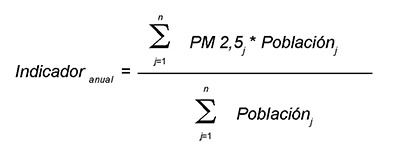
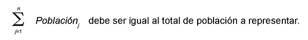
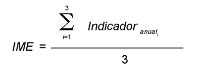

La Directiva 96/62/CE del Consejo, de 27 de septiembre de 1996, sobre evaluación y gestión de la calidad del aire, también conocida como Directiva Marco, modificó la normativa sobre esta materia existente anteriormente en el ámbito comunitario, adoptando un planteamiento general sobre la propia evaluación de la calidad del aire, fijando criterios para el uso y la exactitud en las técnicas de evaluación, así como la definición de unos objetivos de calidad que habían de alcanzarse mediante una planificación adecuada.
Este planteamiento general, que precisaba del consiguiente desarrollo en relación con las distintas sustancias contaminantes para mantener una buena calidad del aire y mejorarla cuando resultase necesario, se concretó en las conocidas como Directivas Hijas: Directiva 1999/30/CE del Consejo, de 22 de abril de 1999, relativa a los valores límite de dióxido de azufre, dióxido de nitrógeno y óxidos de nitrógeno, partículas y plomo en el aire ambiente, modificada por la Decisión de la Comisión 2001/744/CE, de 17 de octubre; Directiva 2000/69/CE del Parlamento Europeo y del Consejo, de 16 de noviembre de 2000, sobre los valores límite para el benceno y el monóxido de carbono en el aire ambiente; Directiva 2002/3/CE del Parlamento Europeo y del Consejo de 12 de febrero de 2002 relativa al ozono en el aire ambiente; y Directiva 2004/107/CE del Parlamento Europeo y del Consejo de 15 de diciembre de 2004 relativa al arsénico, el cadmio, el mercurio, el níquel y los hidrocarburos aromáticos policíclicos en el aire ambiente.
La incorporación de estas Directivas a nuestro ordenamiento jurídico se hizo, a partir de la base legal que constituía la Ley 38/1972, de 22 de diciembre, de protección del Ambiente Atmosférico, desarrollada por el Decreto 833/1975, de 6 de febrero, mediante las siguientes normas: Real Decreto 1073/2002, de 18 de octubre, sobre evaluación y gestión de la calidad del aire ambiente en relación con el dióxido de azufre, dióxido de nitrógeno, óxidos de nitrógeno, partículas, plomo, benceno y monóxido de carbono; Real Decreto 1796/2003, de 26 diciembre, relativo al ozono en el aire ambiente; y Real Decreto 812/2007, de 22 de junio, sobre evaluación y gestión de la calidad del aire ambiente en relación con el arsénico, el cadmio, el mercurio, el níquel y los hidrocarburos aromáticos policíclicos.
La Directiva 2008/50/CE del Parlamento Europeo y del Consejo de 21 de mayo de 2008 relativa a la calidad del aire ambiente y a una atmósfera más limpia en Europa ha venido a modificar el anterior marco regulatorio comunitario, sustituyendo la Directiva Marco y las tres primeras Directivas Hijas, e introduciendo regulaciones para nuevos contaminantes, como las partículas de tamaño inferior a 2,5 micrómetros, y nuevos requisitos en cuanto a la evaluación y la gestión de la calidad del aire ambiente. Ello hace necesario incorporar al derecho interno estas novedades.
Asimismo, la antigua Ley 38/1972, de 22 de diciembre, de Protección del Ambiente Atmosférico ha sido sustituida por la Ley 34/2007, de 15 de noviembre, de calidad del aire y protección de la atmósfera, que aporta la nueva base legal para los desarrollos relacionados con la evaluación y la gestión de la calidad del aire en España. Esta Ley, cuyo fin último es alcanzar unos niveles óptimos de calidad del aire para evitar, prevenir o reducir riesgos o efectos negativos sobre la salud humana, el medio ambiente y demás bienes de cualquier naturaleza, habilita al gobierno a definir y establecer los objetivos de calidad del aire y los requisitos mínimos de los sistemas de evaluación de la calidad del aire. Igualmente, sirve de marco regulador para la elaboración de los planes nacionales, autonómicos y locales para la mejora de la calidad del aire.
De la misma manera, el Decreto 833/1975, que desarrolló la Ley 38/1972, de 22 de diciembre, ha sido sustituido en parte por los Reales Decretos de calidad del aire más arriba citados y por la propia Ley 34/2007, de 15 de noviembre. Además, ha sido objeto de derogaciones parciales, en concreto de los apartados 2 a 6 de su anexo I y del apartado 7 en lo referente a plomo molecular, hidrocarburos y partículas sedimentables. No obstante, han permanecido en vigor criterios de calidad del aire para algunos contaminantes cuya presencia en el aire ambiente puede acarrear efectos perjudiciales. Dichos criterios se incorporan a este real decreto en la disposición transitoria única, manteniéndose vigentes en tanto no se apruebe la normativa que los sustituya. De esta manera, junto con la disposición derogatoria incluida en el Real Decreto 100/2011, de 28 de febrero, por el que se actualiza el catálogo de actividades potencialmente contaminadoras de la atmósfera y se establecen las disposiciones básicas para su aplicación, se completa la derogación total del Decreto 833/1975.
Por otro lado, el amoniaco es un gas altamente reactivo que, además, favorece la generación de partículas secundarias y pertenece al ámbito de la Ley 34/2007, de 15 de noviembre, por ser un compuesto de nitrógeno. Las principales emisiones atmosféricas de amoniaco se deben a las actividades agropecuarias, aunque las emisiones de la industria y del tráfico rodado pueden ser puntualmente importantes y en un futuro próximo podrían incrementarse estas últimas por el uso masivo de sistemas de reducción catalítica selectiva. También se ha constatado que, últimamente, las emisiones difusas del alcantarillado urbano pueden suponer una fuente localmente importante. Por ello, se considera oportuno mantener una vigilancia de los niveles de amoniaco en aire ambiente mediante su medición en estaciones de fondo regional y en estaciones de tráfico de las principales ciudades españolas, si bien por el momento no se estima necesario definir objetivos de calidad para este contaminante.
Finalmente, la Ley 14/1986, de 25 de abril, General de Sanidad, atribuye a la Administración del Estado, sin menoscabo de las competencias de las comunidades autónomas, la determinación, con carácter general, de los métodos de análisis y medición y de los requisitos y condiciones mínimas en materia de control sanitario del medio ambiente.
De acuerdo con lo anterior, en consonancia con la citada normativa comunitaria objeto de transposición, y en aras a simplificar la normativa nacional referente a la calidad del aire, este real decreto sustituye a los tres reales decretos citados anteriormente, deroga el antiguo Decreto 833/1975 en todas las disposiciones que tienen que ver con la evaluación y la gestión de la calidad del aire e incluye disposiciones sobre evaluación y gestión de la calidad del aire que afectan a todas las sustancias contaminantes objeto de regulación.
De una parte, y siguiendo el principio de cooperación y colaboración interadministrativa fijado en la Ley 34/2007, define las actuaciones a realizar por todas las administraciones públicas implicadas en la gestión de la calidad del aire. Por otra parte, y para cada uno de los contaminantes, excepto el amoniaco, establece objetivos de calidad del aire que han de alcanzarse, mediante una planificación y una toma de medidas adecuada, en las fechas que se fijan con la determinación de los correspondientes valores límite u objetivo. Igualmente fija los métodos y criterios comunes para realizar la evaluación de la calidad del aire que, dependiendo de los niveles de los contaminantes, deberá realizarse mediante mediciones, una combinación de mediciones y modelización o solamente modelización y, en función de los resultados obtenidos en esta evaluación, fija los criterios de gestión para lograr el mantenimiento de la calidad del aire o su mejora cuando sea precisa, conforme a los planes de actuación que al respecto se adopten, incluyendo, asimismo, las medidas más severas previstas para los episodios en que puedan ser superados los umbrales de alerta o información fijados.
Por último, además de la información que ha de suministrarse a la ciudadanía y las organizaciones interesadas, se establecen también mediante este real decreto los cauces necesarios para dar cumplimiento a la Decisión 2004/461/CE relativa al cuestionario que debe utilizarse para presentar información anual sobre la evaluación de la calidad del aire ambiente de conformidad con las Directivas 96/62/CE y 1999/30/CE del Consejo y con las Directivas 2000/69/CE y 2002/3/CE del Parlamento Europeo y el Consejo, o la normativa europea que la sustituya. De esta manera quedan determinados los formatos y la periodicidad que permiten un tratamiento de la información de forma armonizada, con métodos y criterios comunes.
Finalmente, se ha procedido a la inclusión de una disposición final con el objeto de modificar el Real Decreto 508/2007, de 20 de abril, por el que se regula el suministro de información sobre emisiones del Reglamento E-PRTR y de las autorizaciones ambientales integradas, procediendo a la clarificación de determinados requisitos de información y publicación de la misma en el Registro Estatal de Emisiones y Fuentes Contaminantes (PRTR-España).
La elaboración de este real decreto ha sido realizada con la participación y consulta de las comunidades autónomas y el Consejo Asesor de Medido Ambiente (CAMA), habiendo sido consultados los sectores afectados y con la información y participación del público mediante medios telemáticos.
En su virtud, a propuesta de las Ministras de Medio Ambiente, y Medio Rural y Marino y de Sanidad, Política Social e Igualdad, de acuerdo con el Consejo de Estado y previa deliberación del Consejo de Ministros en su reunión del día 28 de enero de 2011,
DISPONGO:
CAPÍTULO I
Disposiciones generales
Artículo 1. Objeto.
Este real decreto tiene por objeto:
a) Definir y establecer objetivos de calidad del aire, de acuerdo con el anexo III de la Ley 34/2007, con respecto a las concentraciones de dióxido de azufre, dióxido de nitrógeno y óxidos de nitrógeno, partículas, plomo, benceno, monóxido de carbono, ozono, arsénico, cadmio, níquel y benzo(a)pireno en el aire ambiente.
b) Regular la evaluación, el mantenimiento y la mejora de la calidad del aire en relación con las sustancias enumeradas en el apartado anterior y los hidrocarburos aromáticos policíclicos (HAP) distintos al benzo(a)pireno.
c) Establecer métodos y criterios comunes de evaluación de las concentraciones de las sustancias reguladas en el apartado 1, el mercurio y los HAP y de los depósitos de arsénico, cadmio, mercurio, níquel y HAP.
d) Determinar la información a la población y a la Comisión Europea sobre las concentraciones y los depósitos de las sustancias mencionadas en los apartados anteriores, el cumplimiento de sus objetivos de calidad del aire, los planes de mejora y demás aspectos regulados en la presente norma.
e) Establecer, para amoniaco (NH3), de acuerdo con el anexo III de la Ley 34/2007, métodos y criterios de evaluación y establecer la información a facilitar a la población y a intercambiar entre las administraciones.
Todo ello con la finalidad de evitar, prevenir y reducir los efectos nocivos de las sustancias mencionadas sobre la salud humana, el medio ambiente en su conjunto y demás bienes de cualquier naturaleza.
Artículo 2. Definiciones.
A efectos de este real decreto se entenderá por:
1. Aire ambiente: el aire exterior de la baja troposfera, excluidos los lugares de trabajo.
2. Contaminante: cualquier sustancia presente en el aire ambiente que pueda tener efectos nocivos sobre la salud humana, el medio ambiente en su conjunto y demás bienes de cualquier naturaleza.
3. Nivel: la concentración de un contaminante en el aire ambiente o su depósito en superficies en un momento determinado.
4. Depósito total: la masa total de un contaminante transferida de la atmósfera a las superficies como, por ejemplo, suelos, vegetación, agua, edificios, etc., en un área determinada y durante un periodo determinado.
5. Evaluación: cualquier método utilizado para medir, calcular, predecir o estimar el nivel de un contaminante en el aire ambiente o sus efectos.
6. Objetivo de calidad del aire: nivel de cada contaminante, aisladamente o asociado con otros, cuyo establecimiento conlleva obligaciones conforme las condiciones que se determinen para cada uno de ellos.
7. Valor límite: un nivel fijado basándose en conocimientos científicos, con el fin de evitar, prevenir o reducir los efectos nocivos para la salud humana, para el medio ambiente en su conjunto y demás bienes de cualquier naturaleza que debe alcanzarse en un período determinado y no superarse una vez alcanzado.
8. Margen de tolerancia: porcentaje del valor límite o cantidad en que éste puede sobrepasarse con arreglo a las condiciones establecidas.
9. Nivel crítico: nivel fijado con arreglo a conocimientos científicos por encima del cual pueden producirse efectos nocivos para algunos receptores como las plantas, árboles o ecosistemas naturales pero no para el hombre.
10. Valor objetivo: nivel de un contaminante que deberá alcanzarse, en la medida de lo posible, en un momento determinado para evitar, prevenir o reducir los efectos nocivos sobre la salud humana, el medio ambiente en su conjunto y demás bienes de cualquier naturaleza.
11. Objetivo a largo plazo: nivel de un contaminante que debe alcanzarse a largo plazo, salvo cuando ello no sea posible con el uso de medidas proporcionadas, con el objetivo de proteger eficazmente la salud humana, el medio ambiente en su conjunto y demás bienes de cualquier naturaleza.
12. Umbral de información: nivel de un contaminante a partir del cual una exposición de breve duración supone un riesgo para la salud humana de los grupos de población especialmente vulnerables y las Administraciones competentes deben suministrar una información inmediata y apropiada.
13. Umbral de alerta: un nivel a partir del cual una exposición de breve duración supone un riesgo para la salud humana que afecta al conjunto de la población y requiere la adopción de medidas inmediatas por parte de las Administraciones competentes.
14. Zona: porción de territorio delimitada por la Administración competente y utilizada para evaluación y gestión de la calidad del aire.
15. Aglomeración: conurbación de población superior a 250.000 habitantes o bien, cuando la población sea igual o inferior a 250.000 habitantes, con una densidad de población por km2 que determine la Administración competente y justifique que se evalúe y controle la calidad del aire ambiente.
16. Umbral superior de evaluación: el nivel por debajo del cual puede utilizarse una combinación de mediciones fijas y técnicas de modelización y/o mediciones indicativas para evaluar la calidad del aire ambiente.
17. Umbral inferior de evaluación: el nivel por debajo del cual es posible limitarse al empleo de técnicas de modelización para evaluar la calidad del aire ambiente.
18. Indicador medio de exposición: nivel medio, determinado a partir de las mediciones efectuadas en ubicaciones de fondo urbano de todo el territorio nacional, que refleja la exposición de la población; se emplea para calcular el objetivo nacional de reducción de la exposición y la obligación en materia de concentración de la exposición.
19. Obligación en materia de concentración de la exposición: nivel fijado sobre la base del indicador medio de exposición, con el fin de reducir los efectos nocivos para la salud humana que debe alcanzarse en un período determinado.
20. Objetivo nacional de reducción de la exposición: porcentaje de reducción del indicador medio de exposición de la población nacional establecido para el año de referencia con el fin de reducir los efectos nocivos para la salud humana, que debe alcanzarse, en la medida de lo posible, en un período determinado.
21. Ubicaciones de fondo urbano: lugares situados en zonas urbanas cuyos niveles sean representativos de la exposición de la población urbana en general.
22. Óxidos de nitrógeno: la suma, en partes por mil millones en volumen de monóxido de nitrógeno y dióxido de nitrógeno, expresada como concentración másica de dióxido de nitrógeno en microgramos por metro cúbico, µg/m3.
23. PM10: partículas que pasan a través del cabezal de tamaño selectivo, definido en el método de referencia para el muestreo y la medición de PM10 de la norma UNE-EN 12341, para un diámetro aerodinámico de 10 µm con una eficiencia de corte del 50 %.
24. PM2,5: partículas que pasan a través del cabezal de tamaño selectivo, definido en el método de referencia para el muestreo y la medición de PM2,5 de la norma UNE-EN 14907, para un diámetro aerodinámico de 2,5 µm con una eficiencia de corte del 50 %.
25. Compuestos orgánicos volátiles (COV): todos los compuestos orgánicos procedentes de fuentes antropogénicas y biogénicas, distintos del metano, que puedan producir oxidantes fotoquímicos por reacción con óxidos de nitrógeno en presencia de luz solar.
26. Sustancias precursoras del ozono: sustancias que contribuyen a la formación de ozono en la baja atmósfera.
27. «Arsénico», «cadmio», «níquel» y «benzo(a)pireno»: niveles en aire ambiente de estos elementos en la fracción PM10.
28. Hidrocarburos aromáticos policíclicos: compuestos orgánicos formados por al menos dos anillos condensados aromáticos constituidos en su totalidad por carbono e hidrógeno.
29. Mercurio gaseoso total: el vapor de mercurio elemental, Hg0, y el mercurio gaseoso reactivo o divalente, Hg2+, es decir, las especies de mercurio solubles en agua con una presión de vapor suficientemente elevada para existir en fase gaseosa.
30. Aportaciones procedentes de fuentes naturales: emisiones de contaminantes no causadas directa ni indirectamente por actividades humanas, incluyendo fenómenos naturales como las erupciones volcánicas, las actividades sísmicas o geotérmicas, los incendios forestales no intencionados, los fuertes vientos, los aerosoles marinos, la resuspensión atmosférica y el transporte de partículas naturales procedentes de regiones áridas.
31. Mediciones fijas: las mediciones de contaminantes realizadas en lugares fijos, ya sea de forma continua o aleatoria, siendo el número de mediciones suficiente para determinar los niveles observados de conformidad con los objetivos de calidad de los datos.
32. Mediciones indicativas: mediciones cuyos objetivos de calidad de los datos en cuanto a cobertura temporal mínima son menos estrictos que los exigidos para las mediciones fijas.
33. Planes de calidad del aire: planes que contienen medidas para mejorar la calidad del aire de forma que los niveles de los contaminantes estén por debajo de los valores límite o los valores objetivo.
34. Mejores técnicas disponibles: Las descritas en el artículo 3.ñ) de la Ley 16/2002, de 1 de julio, de prevención y control integrados de la contaminación.
Artículo 3. Actuaciones de las Administraciones públicas.
1. El Ministerio de Medio Ambiente, y Medio Rural y Marino, a través de la Dirección General de Calidad y Evaluación Ambiental, realizará las siguientes actuaciones:
a) Adoptará las medidas de coordinación que, en aplicación del presente real decreto, resulten necesarias para facilitar a la Comisión Europea los datos e informaciones derivados de la normativa comunitaria y para llevar a cabo programas comunitarios de garantía de calidad de las mediciones organizados por la Comisión Europea.
b) Propondrá las medidas de cooperación con los demás Estados Miembros y con la Comisión Europea en materia de calidad del aire.
c) Elaborará, con la participación de las administraciones competentes, los Planes nacionales de mejora de la calidad del aire señalados en el apartado 5 del artículo 24.
d) Recopilará la información técnica sobre la contaminación atmosférica de fondo y la facilitará, por una parte, a los organismos internacionales pertinentes para el cumplimiento de las obligaciones derivadas de Convenios u otro tipo de compromisos internacionales sobre contaminación transfronteriza y, por otra, a las comunidades autónomas y, en su caso, las entidades locales, para su uso como complemento para la evaluación y gestión de la calidad de aire en sus respectivos territorios.
e) Propondrá las medidas necesarias para coordinar las actuaciones que deben llevarse a cabo en el supuesto del artículo 5.1.h) de la Ley 34/2007, de 15 de noviembre.
f) Elaborará un sistema de control y garantía de calidad que asegure la exhaustividad, coherencia, transparencia, comparabilidad y confianza en todo el proceso objeto de sus actuaciones.
g) Integrará en el Sistema Español de Información, Vigilancia y Prevención de la Contaminación Atmosférica, creado por la Ley 34/2007, toda la información a que den lugar las actuaciones anteriores.
Por su parte, la Agencia Estatal de Meteorología, adscrita al Ministerio de Medio Ambiente, y Medio Rural y Marino y responsable de la gestión de la red EMEP/VAG/CAMP de contaminación atmosférica de fondo, implantará un sistema de control y garantía de calidad que asegure la exhaustividad, coherencia, transparencia, comparabilidad y confianza de los resultados obtenidos en dicha red y realizará las mediciones indicativas de partículas PM2,5 descritas en el artículo 8; las mediciones indicativas de metales pesados e hidrocarburos aromáticos policíclicos descritas en el artículo 9 y las mediciones de amoniaco en estaciones rurales de fondo señaladas en el artículo 12.
2. El Instituto de Salud Carlos III, adscrito al Ministerio de Ciencia e Innovación, a los efectos del artículo 3 de la Directiva 2008/50/CE, actuará como Laboratorio Nacional de Referencia y como tal realizará las siguientes actuaciones:
a) Participará en los ejercicios de intercomparación comunitarios.
b) Coordinará a escala nacional la correcta utilización de los métodos de referencia y la demostración de la equivalencia de los métodos que no sean de referencia.
c) Propondrá métodos de referencia nacionales cuando no existan dichos métodos en el ámbito de la Unión Europea.
d) Asistirá a la Dirección General de Calidad y Evaluación Ambiental en el desempeño de sus actuaciones.
Para ello, deberá estar acreditado con arreglo a la Norma UNE-EN ISO/IEC 17025 respecto de los métodos de referencia mencionados en el anexo VII.
3. Las comunidades autónomas, en el ámbito de sus respectivas competencias, y las entidades locales cuando corresponda según lo previsto en el artículo 5 de la Ley 34/2007, de 15 de noviembre, de calidad del aire y prevención de la atmósfera, el artículo 26 de la Ley 7/1985, de 2 de abril, Reguladora de las Bases de Régimen Local, en los artículos 41 y 42 de la Ley 14/1986, de 25 de abril, General de Sanidad, en los artículos 5, 8 y 10 de la Ley 34/2007 y en la legislación de las comunidades autónomas:
a) Designarán los órganos competentes, laboratorios, institutos u organismos técnico-científicos, encargados de la aplicación de las normas sobre calidad del aire ambiente y, en particular, de la garantía de la exactitud de las mediciones y de los análisis de los métodos de evaluación. Dichos órganos deberán cumplir lo establecido en el apartado III del anexo V.
b) Realizarán en su ámbito territorial la delimitación y clasificación de las zonas y aglomeraciones en relación con la evaluación y la gestión de la calidad del aire ambiente; así como la toma de datos y evaluación de las concentraciones de los contaminantes regulados, y el suministro de información al público.
c) Adoptarán las medidas necesarias para garantizar que las concentraciones de los contaminantes regulados no superen los objetivos de calidad del aire y para la reducción de dichas concentraciones, así como las medidas de urgencia para que las concentraciones de los contaminantes regulados vuelvan a situarse por debajo de los umbrales de alerta y comunicarán la información correspondiente al público en caso de superación de éstos. En particular, aprobarán los planes de mejora de calidad del aire definidos en el artículo 24.1 y 24.6 y los planes de acción a corto plazo señalados en el artículo 25.
d) Aprobarán los sistemas de medición, consistentes en métodos, equipos, redes y estaciones.
e) Colaborarán entre sí en el supuesto de que se sobrepasen los objetivos de calidad del aire fijados en un ámbito territorial superior al de una comunidad autónoma, bajo la coordinación del Ministerio de Medio Ambiente, y Medio Rural y Marino.
f) Podrán establecer objetivos de calidad del aire más estrictos que los fijados en este real decreto.
4. Las administraciones públicas intercambiarán los correspondientes datos e informaciones para la evaluación y correcta gestión de la calidad del aire a través del Sistema Español de Información, Vigilancia y Prevención de la contaminación atmosférica.
Artículo 4. Objetivos de calidad del aire.
Los objetivos de calidad del aire para cada uno de los contaminantes regulados son los que se fijan en el anexo I. Para su determinación se seguirán los criterios de agregación y cálculo que figuran en la sección J de dicho anexo.
Artículo 5. Designación de zonas y aglomeraciones.
Las comunidades autónomas dividirán todo su territorio en zonas y aglomeraciones. En todas esas zonas y aglomeraciones deberán llevarse a cabo actividades de evaluación y gestión de la calidad del aire para los contaminantes de las Secciones primera y segunda del Capítulo II.
CAPÍTULO II
Evaluación de la calidad del aire
Sección 1.ª Evaluación de la calidad del aire en relación al dióxido de azufre, el dióxido de nitrógeno y los óxidos de nitrógeno, las partículas, el plomo, el benceno y el monóxido de carbono, el arsénico, el cadmio, el níquel, el mercurio, el benzo(a)pireno y los demás hidrocarburos aromáticos policíclicos (HAP)
Artículo 6. Evaluación de la calidad del aire ambiente.
1. Las comunidades autónomas, y las entidades locales cuando corresponda según lo previsto en los artículos 5.3 y 10.1 de la Ley 34/2007, clasificarán cada zona o aglomeración de su territorio, definidas según el artículo 5, en relación con los umbrales de evaluación del anexo II y realizarán la evaluación de la calidad del aire para el dióxido de azufre, el dióxido de nitrógeno y los óxidos de nitrógeno, las partículas, el plomo, el benceno y el monóxido de carbono, el arsénico, el cadmio, el níquel y el benzo(a)pireno en todas las zonas y aglomeraciones de su territorio, y de acuerdo a los principios del anexo III.
2. La clasificación con respecto a los umbrales superior e inferior de evaluación de cada zona o aglomeración se revisará por lo menos cada cinco años con arreglo al procedimiento establecido en el apartado II del anexo II. Esa revisión tendrá lugar antes de lo establecido si se producen cambios significativos en las actividades que puedan tener incidencia sobre las concentraciones en el aire ambiente de los contaminantes expresados.
3. La evaluación de la calidad del aire ambiente se realizará, dependiendo del nivel de los contaminantes con respecto a los umbrales a los que se refiere el anexo II, utilizando mediciones fijas, técnicas de modelización, campañas de mediciones representativas, mediciones indicativas o investigaciones, o una combinación de todos o algunos de estos métodos.
4. Será obligatorio efectuar mediciones de la calidad del aire en lugares fijos en las zonas y aglomeraciones donde los niveles superen los umbrales superiores de evaluación establecidos en el anexo II. Dichas mediciones fijas podrán complementarse con modelización o mediciones indicativas para obtener información adecuada sobre la distribución espacial de la calidad del aire ambiente.
5. Si los niveles detectados para el dióxido de azufre, el dióxido de nitrógeno y los óxidos de nitrógeno, las partículas, el plomo, el benceno y el monóxido de carbono, están comprendidos entre los umbrales inferior y superior de evaluación del anexo II podrá utilizarse una combinación de mediciones fijas y técnicas de modelización y/o mediciones indicativas. Si los niveles detectados para el arsénico, el cadmio, el níquel y el benzo(a)pireno) están comprendidos entre los umbrales inferior y superior de evaluación del anexo II podrá utilizarse una combinación de mediciones, incluidas las indicativas a que se refiere la sección I del anexo VI, y técnicas de modelización
6. En todas las zonas y aglomeraciones donde el nivel de contaminantes se halle por debajo del umbral inferior de evaluación establecido para esos contaminantes, será suficiente con utilizar técnicas de modelización para la evaluación de la calidad del aire ambiente.
Artículo 7. Mediciones.
1. Para la medición de las concentraciones de los distintos contaminantes, la ubicación de los puntos de muestreo se ajustará al contenido del anexo III; los criterios de determinación del número mínimo de puntos de muestreo para la medición fija de las concentraciones se ajustarán al contenido del anexo IV; los objetivos de calidad de los datos y presentación de resultados se ajustarán al contenido de los anexos V y VI; y los métodos de referencia para la evaluación de las concentraciones se ajustarán al contenido del anexo VII.
2. Además, cuando de acuerdo con el artículo 7.2.b) de la Ley 34/2007 se haya fijado la obligación de contar con estaciones de medida de los niveles de contaminación, dichas estaciones deberán cumplir con los criterios de emplazamiento señalados en el anexo III y en los apartados I.b y III.b del anexo IV referidos a fuentes puntuales.
3. En las zonas y aglomeraciones en que la información sobre dióxido de azufre, dióxido de nitrógeno y óxidos de nitrógeno, partículas, plomo, benceno y monóxido de carbono proporcionada por las estaciones de medición fijas se complete con información procedente de otras fuentes, tales como inventarios de emisiones, métodos de medición indicativa y modelos de la calidad del aire, el número de estaciones de medición fijas especificado en el apartado I del anexo IV podrá reducirse hasta en un 50 %, siempre y cuando se cumplan las condiciones siguientes:
a) Los métodos suplementarios aporten información suficiente para la evaluación de la calidad del aire en lo que respecta a los valores límite o los umbrales de alerta, así como información adecuada para el público.
b) el número de puntos de muestreo que vaya a instalarse y la resolución espacial de otras técnicas resulten suficientes para determinar la concentración del contaminante de que se trate conforme a los objetivos de calidad de los datos especificados en el apartado I del anexo V y posibiliten que los resultados de la evaluación se ajusten a los criterios señalados en el apartado II del anexo V.
Los resultados de la modelización y/o la medición indicativa se tendrán en cuenta para la evaluación de la calidad del aire en relación con los valores límite y objetivo.
4. En las zonas y aglomeraciones en las que la información sobre arsénico, cadmio, níquel y benzo(a)pireno proporcionada por las estaciones de medición fijas se complete con información procedente de otras fuentes, tales como inventarios de emisiones, métodos de medición indicativa y modelos de la calidad del aire, el número de estaciones de medición fijas y la resolución espacial de otras técnicas deberán ser suficientes para determinar el nivel de dichos contaminantes atmosféricos de conformidad con el apartado II del anexo III y el apartado I del anexo VI.
Artículo 8. Criterios adicionales para las partículas PM2,5.
Además de las evaluaciones indicadas en el artículo 6, el Ministerio de Medio Ambiente, y Medio Rural y Marino, en colaboración con las comunidades autónomas, establecerá puntos de muestreo para mediciones indicativas en ubicaciones rurales de fondo alejadas de fuentes significativas de contaminación atmosférica con el objetivo de facilitar, como mínimo, información acerca de la concentración másica total y la especiación química de las concentraciones de partículas PM2,5, en medias anuales, y empleando los criterios siguientes:
a) Se instalará un punto de muestreo cada 100 000 km2.
b) Se podrá acordar con los Estados limítrofes el establecimiento de una o varias estaciones de medición comunes que abarquen las zonas colindantes relevantes con el fin de conseguir la resolución espacial necesaria.
c) Cuando proceda, las actividades de vigilancia deberán coordinarse con la Estrategia de vigilancia continuada y medición del Programa de cooperación para la vigilancia continua y la evaluación del transporte a gran distancia de contaminantes atmosféricos en Europa (EMEP).
d) El apartado I del anexo V y las especificaciones de los sistemas de control y garantía de calidad se aplicarán en relación con los objetivos de calidad de los datos para las mediciones de la concentración másica de las partículas y el anexo VIII se aplicará en su integridad.
Artículo 9. Criterios adicionales para arsénico, cadmio, mercurio, níquel e hidrocarburos aromáticos policíclicos.
1. Para evaluar la contribución del benzo(a)pireno al aire ambiente, las comunidades autónomas medirán otros hidrocarburos aromáticos policíclicos en un número limitado de lugares. Los compuestos que deberán medirse serán como mínimo los siguientes: benzo(a)antraceno, benzo(b)fluoranteno, benzo(j)fluoranteno, benzo(k)fluoranteno, indeno(1,2,3-cd)pireno y dibenzo(a,h)antraceno. Los lugares de toma de muestra de estos hidrocarburos aromáticos policíclicos se situarán junto a los de benzo(a)pireno y se elegirán de forma que pueda identificarse la variación geográfica y las tendencias a largo plazo. Para ello se aplicarán los apartados II, III y IV del anexo III.
2. Independientemente de los niveles en aire ambiente, el Ministerio de Medio Ambiente, y Medio Rural y Marino, en colaboración con las comunidades autónomas, establecerá un punto de muestreo cada 100 000 km2 para la medición indicativa, en el aire ambiente, del arsénico, cadmio, mercurio gaseoso total, níquel, benzo(a)pireno, y de los demás hidrocarburos aromáticos policíclicos contemplados en el apartado 1, así como de sus depósitos totales. También se medirá el mercurio particulado y el mercurio gaseoso divalente. Estas medidas se coordinarán con la Estrategia de vigilancia continuada y medición del Programa EMEP. Los lugares de muestreo para estos contaminantes deberán seleccionarse de manera que pueda identificarse la variación geográfica y las tendencias a largo plazo. A tal fin se aplicarán los apartados II, III y IV del anexo III.
Sección 2.ª Evaluación de la calidad del aire en relación al ozono
Artículo 10. Evaluación de las concentraciones de ozono y de las sustancias precursoras.
1. Las comunidades autónomas, y las entidades locales cuando corresponda según lo previsto en los artículos 5.3 y 10.1 de la Ley 34/2007, clasificarán cada zona o aglomeración de su territorio, definidas según el artículo 5, en relación con los valores objetivos del anexo I y realizarán la evaluación de la calidad del aire para el ozono en todas las zonas y aglomeraciones de su territorio.
2. En aquellas zonas y aglomeraciones en las cuales, durante alguno de los cinco años anteriores de mediciones, las concentraciones de ozono hubiesen superado un objetivo a largo plazo, serán obligatorias las mediciones fijas continuas. Estas mediciones fijas podrán constituir la única fuente de información o podrán complementarse con información procedente de modelización y/o mediciones indicativas.
Cuando se disponga de datos correspondientes a un período inferior a cinco años para determinar las superaciones, las Administraciones competentes podrán combinar campañas de medición de corta duración en los períodos y lugares en que la probabilidad de observar niveles elevados de contaminación sea alta, de acuerdo con los resultados obtenidos de los inventarios de emisiones y la modelización.
3. En el resto de zonas y aglomeraciones distintas de las enumeradas en el primer párrafo del apartado 2, se podrán complementar las mediciones fijas continuas con información procedente de modelización y/o mediciones indicativas.
Artículo 11. Mediciones de ozono y de las sustancias precursoras.
1. Los criterios para determinar la ubicación de los puntos de muestreo para la medición del ozono son los que se establecen en el anexo IX. Los objetivos de calidad de los datos se ajustarán a lo especificado en el anexo V.
2. En el apartado I del anexo X se establece el número mínimo de puntos fijos de muestreo para la medición continua del ozono en cada zona o aglomeración en la que la medición sea la única fuente de información para evaluar la calidad del aire.
3. Se deberán hacer también mediciones del dióxido de nitrógeno en al menos el 50 por 100 de los puntos de muestreo de ozono exigidos en el apartado I del anexo X. Las mediciones del dióxido de nitrógeno serán mediante técnicas en continuo, salvo en las estaciones rurales de fondo definidas en el apartado I del anexo IX, donde podrán utilizarse otros métodos de medición.
4. En las zonas y aglomeraciones en las que la información procedente de los puntos de muestreo para las mediciones en lugares fijos se complemente con información obtenida por modelización o mediciones indicativas, podrá reducirse el número total de puntos de muestreo especificado en el apartado I del anexo X, siempre que se cumplan las siguientes exigencias:
a) Que los métodos complementarios proporcionen un nivel adecuado de información para la evaluación de la calidad del aire con respecto a los valores objetivo, los objetivos a largo plazo y a los umbrales de información y de alerta.
b) Que el número de puntos de muestreo que se determine y la resolución espacial de otras técnicas sea suficiente para conocer la concentración de ozono de acuerdo con los objetivos de calidad de los datos especificados en el apartado I del anexo V y permita obtener los resultados de evaluación especificados en el apartado II del anexo V.
c) Que el número de puntos de muestreo de cada zona o aglomeración sea, como mínimo, uno por cada dos millones de habitantes o uno cada 50.000 km2, seleccionando el que proporcione un mayor número de puntos de muestreo.
d) Que cada zona o aglomeración contenga al menos un punto de muestreo, y
e) Que se mida el dióxido de nitrógeno en todos los puntos de muestreo restantes excepto en las estaciones rurales de fondo.
En tal caso, se tendrán en cuenta los resultados de la modelización o de las mediciones indicativas para evaluar la calidad del aire en relación con los valores objetivo.
5. En las zonas y aglomeraciones en las que, durante cada uno de los cinco años anteriores de mediciones, las concentraciones sean inferiores a los objetivos a largo plazo, el número de estaciones de medición continua se determinará de conformidad con lo establecido en el apartado II del anexo X.
6. Los compuestos orgánicos volátiles (COV) se determinarán, como mínimo, en una estación urbana o suburbana de cada una de las ciudades con una población superior a 500.000 habitantes. Para ello, se tendrá en cuenta el anexo XI, el resto de exigencias establecidas en la normativa comunitaria y el Programa EMEP y los criterios de macroimplantación del apartado I del anexo IX.
7. Los métodos de referencia que se tendrán en cuenta para la medición del ozono y de los óxidos de nitrógeno son los que se establecen en los apartados 8 y 2, respectivamente, de la sección A del anexo VII u otros métodos en las condiciones de la sección B del anexo VII.
En cuanto a los COV, las comunidades autónomas, y en su caso las entidades locales, comunicarán al Ministerio de Medio Ambiente, y Medio Rural y Marino los métodos que utilizan para su muestreo y medición, y que se ajustarán a lo dispuesto en el apartado IV del anexo XI.
Sección 3.ª Evaluación de la calidad del aire en relación con el amoniaco
Artículo 12. Mediciones de las concentraciones de amoniaco.
1. El Ministerio de Medio Ambiente, y Medio Rural y Marino, en colaboración con las comunidades autónomas, determinará 5 puntos rurales de fondo para la medición de niveles en aire ambiente del amoníaco, repartidos uniformemente por el territorio español. Estas medidas se coordinarán con la Estrategia de vigilancia continuada y medición del Programa EMEP.
2. Además, las autoridades competentes garantizarán al menos un punto para la medición de amoniaco en un área de intensidad elevada de tráfico en todas las ciudades con un número de habitantes superior a 500 000.
3. La ubicación de los puntos de muestreo para la medición de las concentraciones de amoniaco, los objetivos de calidad de los datos, y las técnicas de análisis para la evaluación de las concentraciones se ajustarán al contenido del anexo XII.
CAPÍTULO III
Gestión de la calidad del aire
Artículo 13. Obligaciones generales.
1. Los valores límite, incrementados donde proceda por los márgenes de tolerancia, y los niveles críticos establecidos en el anexo I no deberán superarse a partir de las fechas señaladas en dicho anexo.
Con respecto a los valores objetivos y objetivos a largo plazo, las administraciones competentes tomarán todas las medidas necesarias que no conlleven costes desproporcionados para asegurarse que se alcanzan, y no se superan, de acuerdo con las fechas señaladas en dicho anexo I.
Todo ello se hará teniendo en cuenta un enfoque integrado de la protección del medio ambiente, que no se causen efectos negativos y significativos sobre el medio ambiente de los demás Estados miembros de la Unión Europea ni de otros países, y que no se contravenga la legislación sobre protección de la salud y seguridad de los trabajadores y trabajadoras en el lugar de trabajo.
2. Las comunidades autónomas elaborarán listas diferenciadas por contaminantes donde se incluyan las zonas y aglomeraciones siguientes:
a) Aquellas en que los niveles de los contaminantes regulados sean inferiores a sus valores límite o niveles críticos.
b) Las que tengan los niveles de uno o más de los contaminantes regulados comprendidos entre los valores límite y dichos valores límite incrementados en su margen de tolerancia, en los casos en los que se aplique éste.
c) Aquellas donde se supere, para uno o más de los contaminantes regulados, su valor límite, incrementado en su caso en el margen de tolerancia, o los niveles críticos.
d) Aquellas en las que los niveles de los contaminantes regulados sean superiores a los valores objetivo.
e) Aquellas en las que los niveles de ozono sean superiores a los objetivos a largo plazo pero inferiores o iguales a los valores objetivo.
f) Aquellas que cumplan los objetivos a largo plazo para el ozono.
g) Aquellas en las que los niveles de PM2,5, arsénico, cadmio, níquel y benzo(a)pireno sean inferiores a los valores objetivo.
Igualmente, elaborarán una lista de las zonas y aglomeraciones con su situación en relación a los umbrales superior e inferior de evaluación de acuerdo al apartado I del anexo II y siguiendo la metodología del apartado II del mismo anexo.
Artículo 14. Medidas aplicables en las zonas en que se superen los valores límite.
En las zonas y aglomeraciones en que los niveles de uno o más de los contaminantes regulados superen su valor límite incrementado en el margen de tolerancia o, si éste no está establecido, el valor límite, las administraciones competentes adoptarán planes de actuación para reducir los niveles y cumplir así dichos valores límite en los plazos fijados, de acuerdo con lo establecido en el Capítulo IV.
Artículo 15. Medidas aplicables en las zonas en que no se superan los valores límite.
En aquellas zonas o aglomeraciones en que los niveles de los contaminantes regulados sean inferiores a sus valores límite, se adoptarán las medidas necesarias para mantener esta situación, de forma que se obtenga la mejor calidad del aire posible.
Artículo 16. Medidas aplicables en las zonas en que se superen los valores objetivo y los objetivos a largo plazo de ozono.
1. En las zonas y aglomeraciones donde se supere el valor objetivo, las Administraciones competentes adoptarán los planes necesarios para garantizar que se cumpla dicho valor objetivo en la fecha señalada en el anexo I, salvo cuando no pueda conseguirse mediante medidas que no conlleven costes desproporcionados. En todo caso, estas medidas deberán ser compatibles con el Programa nacional de techos nacionales de emisión elaborado en el marco de la Directiva 2001/81/CE del Parlamento Europeo y del Consejo, de 23 de octubre de 2001, sobre techos nacionales de emisión de determinados contaminantes atmosféricos.
2. En las zonas y aglomeraciones en las que los niveles de ozono en el aire ambiente sean superiores a los objetivos a largo plazo pero inferiores o iguales a los valores objetivo regulados en el anexo I, las Administraciones competentes elaborarán y ejecutarán medidas para reducir los niveles y cumplir así dichos objetivos a largo plazo. Estas medidas serán eficaces en relación con su coste y, cuando menos, deberán ser coherentes con todos los planes que se elaboren de conformidad con lo establecido en el apartado anterior y con la restante normativa sobre la materia que también resulte de aplicación.
Artículo 17. Medidas aplicables en las zonas en las que se cumplen los objetivos a largo plazo de ozono.
En las zonas y aglomeraciones donde los niveles de ozono cumplan los objetivos a largo plazo, las Administraciones competentes, en la medida en que lo permitan factores como la naturaleza transfronteriza de la contaminación por ozono o las condiciones meteorológicas, mantendrán dichos niveles por debajo de los objetivos a largo plazo y preservarán, mediante la aplicación de medidas proporcionadas, la mejor calidad del aire ambiente compatible con un desarrollo sostenible y un nivel elevado de protección del medio ambiente y la salud humana.
Artículo 18. Medidas aplicables en las zonas en que se superen los valores objetivo para arsénico, cadmio, níquel y benzo(a)pireno.
1. En las zonas y aglomeraciones en las que se hayan rebasado los valores objetivo fijados en el anexo I, las administraciones competentes especificarán dónde se registran las superaciones y las fuentes que contribuyen a las mismas.
2. Además, las comunidades autónomas deberán demostrar que se aplican todas las medidas necesarias que no generen costes desproporcionados, dirigidas en particular a las fuentes de emisión principales, para reducir los niveles y cumplir los valores objetivo. En el caso de las instalaciones industriales reguladas por la Ley 16/2002, de 1 de julio, de prevención y control integrados de la contaminación, ello significa la aplicación de las mejoras técnicas disponibles.
Artículo 19. Medidas aplicables en las zonas en que no se superen los valores objetivo para arsénico, cadmio, níquel y benzo(a)pireno.
En las zonas y aglomeraciones en las que los niveles sean inferiores a sus respectivos valores objetivo las comunidades autónomas adoptarán las medidas necesarias para mantener esa situación, de forma que se obtenga la mayor calidad posible del aire.
Artículo 20. Medidas aplicables cuando se superen los umbrales de información o de alerta.
Cuando se superen cualquiera de los umbrales indicados en el anexo I o se prevea que se va a superar el umbral de alerta de dicho anexo I, las Administraciones competentes adoptarán las medidas necesarias de urgencia e informarán a la población por radio, televisión, prensa o Internet, entre otros medios posibles, de los niveles registrados o previstos y de las medidas que se vayan a adoptar, de acuerdo con el artículo 28. Las entidades locales y el Ministerio de Medio Ambiente, y Medio Rural y Marino también informarán a la Administración de la Comunidad Autónoma correspondiente cuando se superen los umbrales en estaciones de medición bajo su gestión.
Además, las Administraciones competentes facilitarán al Ministerio de Medio Ambiente, y Medio Rural y Marino, para su envío a la Comisión Europea, información sobre los niveles registrados y sobre la duración de los períodos durante los que se hayan superado los umbrales.
Artículo 21. Objetivo nacional de reducción de la exposición a partículas PM2,5 para la protección de la salud humana.
1. El indicador medio de exposición (IME) a partículas PM2,5 se evaluará conforme a lo establecido en la sección A del anexo XIII.
2. Las autoridades competentes tomarán todas las medidas necesarias que no conlleven gastos desproporcionados para reducir la exposición a partículas PM2,5 con el fin de cumplir el objetivo nacional de reducción de la exposición fijado en la sección B del anexo XIII a más tardar en el año señalado en dicho anexo.
3. Las autoridades competentes garantizarán que el IME para el año 2015, establecido de conformidad con la sección A del anexo XIII, no supere la obligación en materia de concentración de la exposición establecida en la sección C de dicho anexo.
Artículo 22. Aportaciones procedentes de fuentes naturales.
1. Las comunidades autónomas elaborarán anualmente listas con las zonas y aglomeraciones en las que las superaciones de los valores límite de un contaminante sean atribuibles a fuentes naturales. Igualmente, facilitarán al Ministerio de Medio Ambiente, y Medio Rural y Marino información acerca de las concentraciones y las fuentes y las pruebas que demuestren que dichas superaciones son atribuibles a fuentes naturales.
2. Las superaciones atribuibles a fuentes naturales según el apartado anterior no se considerarán superaciones a los efectos de lo dispuesto en el presente real decreto y no originarán la obligación de ejecutar planes de actuación.
3. En el caso de las partículas, se utilizará para la demostración y sustracción de los niveles atribuibles a fuentes naturales la metodología descrita en el anexo XIV.
Artículo 23. Prórroga de los plazos de cumplimiento y exención de la obligación de aplicar ciertos valores límite.
1. Cuando en una zona o aglomeración determinada no puedan respetarse los valores límite de dióxido de nitrógeno o benceno en los plazos fijados en el anexo I, la autoridad competente podrá solicitar prorrogar esos plazos por un máximo de cinco años para esa zona o aglomeración concreta, con la condición de que se haya establecido un plan de calidad del aire de conformidad con el artículo 24 para la zona o aglomeración a la que vaya a aplicarse la prórroga; dicho plan de calidad del aire irá acompañado de la información indicada en la sección B del anexo XV en relación con los contaminantes de que se trate y demostrará que van a respetarse los valores límite antes del final de la prórroga.
2. Cuando en una zona o aglomeración determinada no puedan respetarse los valores límite de PM10 especificados en el anexo I debido a las características de dispersión propias de esos lugares, las condiciones climáticas adversas o las contribuciones transfronterizas, la autoridad competente podrá solicitar la exención de aplicar esos valores límite hasta el 11 de junio de 2011 como máximo, siempre que se cumplan las condiciones recogidas en el apartado 1 y que demuestre que se han adoptado todas las medidas adecuadas, a escala nacional, regional y local, para respetar los plazos.
3. Cuando se aplique lo dispuesto en los apartados 1 ó 2, la autoridad competente se asegurará de que la superación del valor límite de cada contaminante no supera el margen máximo de tolerancia especificado para cada uno de los contaminantes en el anexo I.
4. Las comunidades autónomas y, en su caso, las entidades locales, notificarán al Ministerio de Medio Ambiente, y Medio Rural y Marino los supuestos en los que, a su juicio, sean de aplicación los apartados 1 y 2. Dicha notificación se realizará siguiendo las directrices establecidas en la «Comunicación de la Comisión sobre las notificaciones de las prórrogas de los plazos de cumplimiento de ciertos valores límite y las exenciones de la obligación de aplicarlos en virtud del artículo 22 de la Directiva 2008/50/CE sobre la calidad del aire ambiente y una atmósfera más limpia en Europa» (COM(2008) 403) e irá acompañada del plan de calidad del aire mencionado en el apartado 1 y de toda la información necesaria para que la Comisión Europea examine si se cumplen o no las condiciones pertinentes. El Ministerio de Medio Ambiente, y Medio Rural y Marino, a su vez, transmitirá toda esta información a la Comisión Europea.
5. Si la Comisión Europea no plantea ninguna objeción, las condiciones pertinentes para la aplicación de los apartados 1 ó 2 se considerarán cumplidas. Si se planteasen objeciones, las autoridades competentes adaptarán sus planes de calidad del aire o presentarán otros nuevos y se entenderá que no ha lugar a la prórroga o exención solicitada.
CAPÍTULO IV
Planes de calidad del aire
Artículo 24. Planes de mejora de calidad del aire.
1. Cuando en determinadas zonas o aglomeraciones los niveles de contaminantes en el aire ambiente superen cualquier valor límite o valor objetivo, así como el margen de tolerancia correspondiente a cada caso, las comunidades autónomas aprobarán planes de calidad del aire para esas zonas y aglomeraciones con el fin de conseguir respetar el valor límite o el valor objetivo correspondiente especificado en el anexo I.
En caso de superarse los valores límite para los que ya ha vencido el plazo de cumplimiento, los planes de calidad del aire establecerán medidas adecuadas, de modo que el período de superación sea lo más breve posible. Los planes de calidad del aire podrán incluir además medidas específicas destinadas a proteger a los sectores vulnerables de la población, incluidos los niños.
Para su elaboración se contará con la colaboración de los titulares de las actividades industriales potencialmente involucradas y afectadas por las medidas incluidas en los mismos y por su puesta en aplicación.
Esos planes de calidad del aire contendrán al menos la información indicada en la sección A del anexo XV y podrán incluir medidas adoptadas de conformidad con el artículo 25. Esos planes serán transmitidos al Ministerio de Medio Ambiente, y Medio Rural y Marino para su comunicación a la Comisión Europea de acuerdo a la Decisión 2004/224/CE, o la normativa europea que la sustituya, antes de que transcurran dos años desde el final del año en que se observó la primera superación.
Cuando deban elaborarse o ejecutarse planes de calidad del aire respecto de diversos contaminantes, se elaborarán y ejecutarán, cuando así proceda, planes integrados que abarquen todos los contaminantes en cuestión.
2. Lo anterior no será de aplicación en el caso de superación de los valores objetivo del arsénico, el cadmio, el níquel y el benzo(a)pireno si las comunidades autónomas demuestran que se cumplen las condiciones del artículo 18.2.
3. Los órganos correspondientes de las Administraciones Públicas cuyas competencias pudieran verse afectados por el ámbito de aplicación de los planes regulados en este artículo, deberán facilitar al órgano autonómico competente para su aprobación, durante su proceso de elaboración, la información que precise sobre una actividad o una infraestructura que desarrollen en el ejercicio de sus competencias o en una zona de su competencia exclusiva, incluyendo cuantos datos, documentos o medios probatorios se hallen a su disposición, así como un pronunciamiento al respecto de las medidas que se pretenden adoptar en el plan que se está elaborando para la reducción de la contaminación atmosférica en la zona de que se trate.
En este sentido, las entidades locales, a instancia del órgano autonómico competente, deberán elaborar la parte del plan que, por motivos de control de tráfico u otras circunstancias, les corresponda de acuerdo con sus competencias.
4. En el caso de que las medidas de control para reducir la contaminación atmosférica que se establezcan en el plan que, en su caso, elabore cada Comunidad Autónoma, suponga realizar actuaciones en actividades, instalaciones o zonas situadas en el territorio de otra Comunidad Autónoma, de acuerdo con lo establecido en el Título I de la Ley 30/1992, de 26 de noviembre, de Régimen Jurídico de las Administraciones Públicas y del Procedimiento Administrativo Común, la Administración General del Estado y las comunidades autónomas que corresponda acordarán la realización de planes conjuntos de actuación para el logro de objetivos de reducción de la contaminación atmosférica establecidos en este artículo.
A estos efectos, corresponderá a la Conferencia Sectorial en materia de medio ambiente, bajo la coordinación del Ministerio de Medio Ambiente, y Medio Rural y Marino, la iniciativa para acordar la realización de planes conjuntos, la aprobación de su contenido, así como el seguimiento y evaluación multilateral de su puesta en práctica.
5. Independientemente de lo anterior, y de acuerdo a sus competencias, la Administración General del Estado elaborará Planes nacionales de mejora de la calidad del aire para aquellos contaminantes en que se observe comportamientos similares en cuanto a fuentes, dispersión y niveles en varias zonas o aglomeraciones. Estos Planes nacionales contendrán, siempre que sea posible, la información indicada en la sección A del anexo XV y serán tenidos en cuenta por las comunidades autónomas para la elaboración de sus planes.
6. Las entidades locales, en el ámbito de sus competencias, cuando corresponda según lo previsto en el artículo 16 de la Ley 34/2007, podrán elaborar sus propios planes, que tendrán en cuenta los de las respectivas comunidades autónomas, los nacionales y, en la medida de lo posible, se ajustarán al contenido de la sección A del anexo XV.
7. Se asegurará la coherencia de todos los planes con el Plan Nacional de Reducción de Emisiones de Grandes Instalaciones de Combustión, el Plan Nacional de Techos Nacionales de Emisión, los Planes de Ruido Ambiental y los Planes de Lucha contra el Cambio Climático, maximizando en cualquier caso el beneficio medioambiental conjunto.
Artículo 25. Planes de acción a corto plazo.
1. Cuando en una zona o una aglomeración determinada exista el riesgo de que el nivel de contaminantes supere uno o más de los umbrales de alerta especificados en el anexo I, las comunidades autónomas y, en su caso, las entidades locales, elaborarán planes de acción que indicarán las medidas que deben adoptarse a corto plazo para reducir el riesgo de superación o la duración de la misma. Cuando dicho riesgo se refiera a uno o varios valores límite o valores objetivo especificados en las secciones A a H del anexo I, se podrán elaborar, cuando así proceda, esos planes de acción a corto plazo. No obstante, cuando exista un riesgo de superación del umbral de alerta del ozono indicado en el apartado II de la sección H del anexo I, solo se elaborarán esos planes de acción a corto plazo cuando consideren que hay una posibilidad significativa de reducción del riesgo o de la duración o gravedad de la situación, habida cuenta de las condiciones geográficas, meteorológicas y económicas. Al elaborar ese plan de acción a corto plazo, se deberá tener en cuenta la Decisión 2004/279/CE.
2. Los planes de acción a corto plazo indicados en el apartado 1 podrán, en determinados casos, establecer medidas eficaces para controlar y, si es necesario, reducir o suspender actividades que contribuyan de forma significativa a aumentar el riesgo de superación de los valores límite o los valores objetivo o umbrales de alerta respectivos. Esos planes de acción podrán incluir medidas relativas al tráfico de vehículos de motor, a aeronaves en ciclo de aterrizaje y despegue, a obras de construcción, a buques amarrados y al funcionamiento de instalaciones industriales o el uso de productos y a la calefacción doméstica. En el marco de esos planes, también podrán preverse acciones específicas destinadas a proteger a los sectores vulnerables de la población, incluidos los niños.
3. Cuando las autoridades competentes hayan elaborado un plan de acción a corto plazo, pondrán a disposición de la ciudadanía y de las organizaciones interesadas los resultados de sus investigaciones sobre la viabilidad y el contenido de los planes de acción específicos a corto plazo y la información sobre la ejecución de esos planes.
4. Para la elaboración de los planes de acción a corto plazo se tendrán en cuenta, en la medida de lo posible, los ejemplos de buenas prácticas que publicará la Comisión Europea.
Artículo 26. Contaminación transfronteriza.
1. Cuando las concentraciones de contaminantes que superen los valores límite, más el margen de tolerancia, en su caso, los valores objetivo o los objetivos a largo plazo se deban principalmente a las emisiones de precursores en otros Estados miembros u otros países, las comunidades autónomas afectadas lo notificarán al Ministerio de Medio Ambiente, y Medio Rural y Marino, para su comunicación al Ministerio de Asuntos Exteriores y de Cooperación, a efectos de que se realicen las necesarias gestiones entre Estados para remediar la situación.
2. Las medidas que se adopten como consecuencia de las gestiones señaladas en el apartado 1 podrán incluir la elaboración de planes comunes para reducir los niveles de contaminantes y cumplir los valores límite, los valores objetivo o los objetivos a largo plazo. En dichas medidas se tendrá en cuenta que los planes de acción a corto plazo que, en su caso, se elaboren de conformidad con lo establecido en el artículo 25, afectarán a las zonas colindantes de los Estados miembros u otros países implicados. El Ministerio de Asuntos Exteriores y de Cooperación garantizará que las zonas colindantes de otros Estados Miembros u otros países que hayan desarrollado a su vez planes de acción a corto plazo reciben toda la información adecuada.
3. Cuando se produzcan superaciones del umbral de información o de los umbrales de alerta en zonas cercanas a las fronteras del Estado, las comunidades autónomas afectadas lo notificarán al Ministerio de Medio Ambiente, y Medio Rural y Marino, para su comunicación al Ministerio de Asuntos Exteriores y de Cooperación, a efectos de poner este hecho en conocimiento de los Estados miembros u otros países vecinos, a la mayor brevedad posible, para que pueda informarse debidamente a la población de dichos Estados.
CAPÍTULO V
Intercambio de información
Artículo 27. Información a intercambiar entre las administraciones públicas.
1. Las autoridades competentes de las comunidades autónomas y de las entidades locales facilitarán a la Dirección General de Calidad y Evaluación Ambiental del Ministerio de Medio Ambiente, y Medio Rural y Marino, para el cumplimiento del deber de información a la Comisión Europea, la información que se detalla en el capítulo 1 del anexo XVI y en los términos y condiciones que se establezca en la normativa europea comunitaria.
2. El Ministerio de Medio Ambiente, y Medio Rural y Marino, para facilitar la evaluación de la calidad del aire de las distintas comunidades autónomas, facilitará a las mismas la información que se detalla en el capítulo 2 del anexo XVI.
3. La información a que hace referencia los apartados anteriores se transmitirá a través del Sistema Español de Información, Vigilancia y Prevención de la contaminación atmosférica.
4. Se dará por supuesta la validez de todos los datos facilitados, salvo los señalados como provisionales.
Artículo 28. Información al público.
1. Las Administraciones públicas pondrán a disposición del público la información sobre las designaciones a que se refiere el apartado 3.a del artículo 3 de esta norma.
2. Las Administraciones públicas, según sus competencias, pondrán periódicamente a disposición del público y de las organizaciones interesadas la siguiente información relativa a la calidad del aire ambiente:
a) Concentraciones en el aire ambiente de dióxido de azufre, dióxido de nitrógeno y óxidos de nitrógeno, partículas, plomo, benceno, monóxido de carbono, ozono, arsénico, cadmio, mercurio, níquel, benzo(a)pireno y los otros hidrocarburos aromáticos policíclicos mencionados en el artículo 9, expresadas como los valores medios para el cálculo de la media establecido en el anexo I.
b) La información sobre las concentraciones de dióxido de azufre, dióxido de nitrógeno, partículas, al menos PM10, ozono y monóxido de carbono en el aire ambiente se actualizará, como mínimo, cada día, y siempre que sea factible cada hora.
c) La información sobre concentraciones de plomo y benceno, expresadas como promedio de los últimos doce meses, se actualizará al menos una vez al trimestre y, siempre que sea factible, una vez al mes.
d) Niveles de depósito de arsénico, cadmio, mercurio, níquel, benzo(a)pireno y los otros hidrocarburos aromáticos policíclicos mencionados en el artículo 9.
e) Para el amoniaco, la concentración obtenida en los puntos de medición rurales de fondo y de tráfico del artículo 12. Dicha información se actualizará, como mínimo, cada mes.
f) Contaminación de fondo rural, que se actualizará cada mes.
g) Estudios sobre calidad del aire y salud realizados en el ámbito de sus competencias.
Además, la información al público indicará todos los casos en que las concentraciones superen los objetivos de calidad del aire del anexo I, incluidos los valores límite, los valores objetivo, los umbrales de alerta, los umbrales de información y los objetivos a largo plazo, sus causas y la zona afectada. También incluirá una breve evaluación en relación con los objetivos de calidad del aire, así como información adecuada en relación con las repercusiones sobre la salud y, cuando proceda, la vegetación. Y, por último, una descripción de la metodología seguida en la toma de muestras y análisis.
3. En caso de que para la evaluación de la calidad del aire relativa a determinados contaminantes se tengan en cuenta las aportaciones procedentes de fuentes naturales, se informará de la metodología seguida y de las zonas y aglomeraciones en las que las superaciones de los valores límite de un contaminante sean atribuibles a fuentes naturales.
4. Cuando se rebase un umbral de alerta o de información de los recogidos en el anexo I, los detalles difundidos al público incluirán, como mínimo:
a) Información sobre la superación o superaciones observadas, que constará de: ubicación de la zona donde se ha producido la superación; tipo de umbral superado, es decir, de información o de alerta; hora de inicio y duración de la superación; concentración horaria más elevada, acompañada, en el caso del ozono, de la concentración media octohoraria más elevada.
b) Previsiones para la tarde siguiente o el día o días siguientes, que incluirá: zona geográfica donde estén previstos las superaciones de los umbrales de información o alerta; cambios previstos en la contaminación diferenciando entre mejora, estabilización o empeoramiento, junto con los motivos de esos cambios.
c) Información sobre el tipo de población afectada, los posibles efectos para la salud y el comportamiento recomendado, es decir: información sobre los grupos de población de riesgo; descripción de los síntomas probables; recomendaciones sobre las precauciones que debe tener la población afectada; fuentes de información suplementaria.
d) Información sobre las medidas preventivas destinadas a reducir la contaminación y/o la exposición a la misma: indicación de los principales sectores de fuentes de contaminación; recomendaciones de medidas para reducir las emisiones.
e) En el caso de las superaciones previstas, los datos se facilitarán en la mayor medida posible.
5. Las administraciones públicas pondrán a disposición del público y de las organizaciones interesadas toda decisión de prórroga y toda exención, tanto solicitadas como concedidas, de acuerdo con el artículo 23.
6. Las administraciones públicas pondrán a disposición de la población los planes adoptados según los artículos 24 y 25 y los facilitarán, asimismo, a las organizaciones interesadas. La información deberá incluir los resultados de la evaluación de la calidad del aire del apartado II del anexo V.
7. En el caso del arsénico, el cadmio, el níquel y el benzo(a)pireno, las Administraciones públicas pondrán a disposición de la población todas las medidas adoptadas de acuerdo al párrafo segundo del apartado 1 del artículo 13 y a los artículos 18 y 19.
8. Las administraciones públicas pondrán a disposición del público informes anuales sobre todos los contaminantes cubiertos por el presente real decreto. En el caso del amoniaco, esta obligación se entenderá solo para los puntos de medición rurales de fondo y de tráfico. En dichos informes se presentará un compendio de los niveles de superación de los valores límite, los valores objetivo, los objetivos a largo plazo, los umbrales de información y los umbrales de alerta, para los períodos de cálculo de las medias que correspondan. Esa información deberá combinarse con una evaluación sintética de los efectos de esas superaciones. Los informes podrán incluir, cuando proceda, información y evaluaciones suplementarias sobre protección forestal así como información sobre los demás contaminantes para los que el presente real decreto establece medidas de control, como, por ejemplo, las sustancias precursoras del ozono no reguladas que figuran en el apartado II del anexo XI.
9. La información disponible por el público y por las organizaciones en virtud de lo dispuesto en los anteriores apartados deberá ser clara, comprensible y accesible y deberá facilitarse a través de medios de difusión apropiados, como radio, televisión, prensa, pantallas de información, servicios de redes informáticas, páginas Web, teletexto, teléfono o fax.
CAPÍTULO VI
Régimen sancionador
Artículo 29. Régimen sancionador.
Al incumplimiento de lo dispuesto en el presente real decreto le será de aplicación el régimen sancionador previsto en la Ley 34/2007, de 15 de noviembre, de calidad del aire y protección de la atmósfera; en la Ley 14/1986, de 25 de abril, General de Sanidad; y en la Ley 16/2002 de 1 de julio, de Prevención y Control Integrados de la Contaminación.
Disposición adicional única. Evaluación preliminar de la calidad del aire ambiente.
En el ámbito de sus respectivas competencias, las Administraciones públicas deberán realizar una evaluación preliminar de la calidad del aire en relación con las partículas PM2,5 conforme a lo dispuesto en el presente real decreto, cuando no dispongan de mediciones representativas de los niveles de dicho contaminante correspondientes a todas las zonas y aglomeraciones. Dicha evaluación preliminar se realizará a través de campañas de mediciones representativas, de investigaciones o de evaluación.
Disposición transitoria única. Objetivos de calidad del aire de determinados contaminantes.
En tanto no se revisen según lo especificado en el artículo 9 de la Ley 34/2007, serán de aplicación los siguientes objetivos de calidad del aire:
|
Contaminante |
Concentración media en treinta minutos, que no debe superarse |
Concentración media en veinticuatro horas, que no debe superarse |
|---|---|---|
|
Cloro molecular |
300 μg/m3 |
50 μg/m3 |
|
Cloruro de hidrógeno |
300 μg/m3 |
50 μg/m3 |
|
Compuestos de flúor |
60 μg/m3 |
20 μg/m3 |
|
Fluoruro de hidrógeno |
30 μg/m3 |
10 μg/m3 |
|
Sulfuro de hidrógeno |
100 μg/m3 |
40 μg/m3 |
|
Sulfuro de carbono |
30 μg/m3 |
10 μg/m3 |
Disposición derogatoria única. Derogación normativa.
A partir de la entrada en vigor de este real decreto quedan derogadas cuantas disposiciones de igual o inferior rango se opongan a lo dispuesto en el mismo y, en particular, las siguientes:
a) Los Títulos I, II, III y IV, el apartado 1 del anexo I y el apartado 7 del anexo I en lo referente a cloro molecular, cloruro de hidrógeno, compuestos de flúor, fluoruro de hidrógeno, sulfuro de hidrógeno y sulfuro de carbono, del Decreto 833/1975, de 6 de febrero, por el que se desarrolla la Ley 38/1972, de 22 de diciembre, de protección del ambiente atmosférico.
b) El Real Decreto 1073/2002, de 18 de octubre, sobre evaluación y gestión de la calidad del aire ambiente en relación con el dióxido de azufre, dióxido de nitrógeno, óxidos de nitrógeno, partículas, plomo, benceno y monóxido de carbono.
c) El Real Decreto 1796/2003, de 26 de diciembre, relativo al ozono en el aire ambiente. Y
d) El Real Decreto 812/2007, de 22 de junio, sobre evaluación y gestión de la calidad del aire ambiente en relación con el arsénico, el cadmio, el mercurio, el níquel y los hidrocarburos aromáticos policíclicos.
Disposición final primera. Modificación del Real Decreto 508/2007, de 20 de abril, por el que se regula el suministro de información sobre emisiones del Reglamento E-PRTR y de las autorizaciones ambientales integradas.
El Real Decreto 508/2007, de 20 de abril, por el que se regula el suministro de información sobre emisiones del Reglamento E-PRTR y de las autorizaciones ambientales integradas, queda modificado como sigue:
Uno. Las letras a), b) y c) del artículo 3.1 quedan redactadas del siguiente modo:
«3.1 a) Emisiones a la atmósfera, al agua y al suelo, de cualquiera de los contaminantes incluidos en el anexo II.
3.1 b) Transferencias fuera del emplazamiento sea cual fuere la cantidad transferida de residuos peligrosos y no peligrosos de los identificados en la Lista Europea de Residuos incluida en el Anejo 2 de la Orden MAM/304/2002, de 8 de febrero, ya sea para fines de valorización o eliminación de acuerdo con las operaciones "R" o "D" contenidas en el Anejo I de la misma Orden Ministerial.
En el caso de los movimientos transfronterizos de residuos peligrosos además se deberá informar del nombre y la dirección del responsable de la valorización o eliminación de los residuos, así como del centro de eliminación o valorización en cuestión.
No tendrán la consideración de transferencias de residuos las operaciones de eliminación de "tratamiento de suelo" o "inyección profunda" contempladas en el artículo 6 del Reglamento E-PRTR.
A efectos de información pública, será de aplicación el valor umbral de 2 toneladas anuales para las transferencias de residuos peligrosos y el de 2.000 toneladas/año para las transferencias de residuos no peligrosos.
3.1 c) Transferencia fuera del emplazamiento de cualquiera de los contaminantes incluidos en el anexo II en aguas residuales destinadas a tratamiento.»
Dos. Se añade un tercer apartado al artículo 4, con la siguiente redacción:
«3. El 15 de noviembre siguiente al período anual al que están referidos los datos, el Ministerio de Medio Ambiente, y Medio Rural y Marino procederá a la publicación de la información correspondiente en el Registro Estatal de Emisiones y Fuentes Contaminantes (PRTR-España).»
Tres. Se añade un nuevo artículo 8 con la siguiente redacción:
«Artículo 8. Régimen Sancionador.
El incumplimiento de las obligaciones establecidas en el presente real decreto dará lugar a la aplicación del régimen sancionador previsto en la Ley 16/2002, de 1 de julio, de Prevención y Control Integrados de la Contaminación.»
Cuatro. El encabezado de la tabla del anexo II de la lista de sustancias, en su apartado A.1, queda redactado como sigue:
«A.1 Contaminantes/sustancias respecto de los que, en todo caso, hay que suministrar información.»
Cinco. En el campo «población» incluido en el apartado 2.1 «Identificación complejo» de la Tabla «Información del complejo industrial y datos de emisiones», del Capítulo I del Anexo III, se añade a continuación y entre paréntesis «dato opcional».
Seis. En la tabla «Información del complejo industrial y datos de emisiones», del Capitulo I del Anexo III, en su apartado 5 «DATOS DE EMISIONES POR COMPLEJO INDUSTRIAL», secciones «TRANSFERENCIAS DE RESIDUOS PELIGROSOS Y NO PELIGROSOS FUERA DEL EMPLAZAMIENTO GENERADOS POR EL COMPLEJO/INSTALACIÓN», siempre que aparece el término «recuperación» debe sustituirse por «valorización», de acuerdo con los términos empleados en el Anejo I de la Orden MAM/304/2002, de 8 de febrero.
Siete. Las notas aclaratorias d) y e) contenidas en el pie de la Tabla «Información del complejo industrial y datos de emisiones», del Capítulo I del Anexo III, quedarán modificadas como sigue:
«d) clasificación nacional de actividades económicas de acuerdo a la legislación vigente,
e) código NACE según la clasificación de actividades económicas europea, de acuerdo con la legislación vigente.»
Disposición final segunda. Fundamento constitucional.
El presente real decreto se dicta al amparo de las competencias exclusivas que al Estado otorga el artículo 149.1.16.ª y 23.ª de la Constitución, en materia de bases y coordinación general de la sanidad y de legislación básica sobre protección del medio ambiente.
Disposición final tercera. Incorporación del derecho comunitario al derecho nacional.
Mediante el presente real decreto se incorpora al derecho nacional la Directiva 2008/50/CE del Parlamento Europeo y del Consejo de 21 de mayo de 2008 relativa a la calidad del aire ambiente y a una atmósfera más limpia en Europa.
Disposición final cuarta. Habilitación normativa.
Se autoriza a los Ministros de Medio Ambiente, y Medio Rural y Marino y de Sanidad, Política Social e Igualdad para dictar, en el ámbito de sus respectivas competencias, las disposiciones necesarias para la adaptación de los anexos a la normativa comunitaria y, en particular, para el establecimiento de valores límite para cortos periodos de exposición para hidrocarburos y benceno.
Disposición final quinta. Entrada en vigor.
El presente real decreto entrará en vigor el día siguiente al de su publicación en el «Boletín Oficial del Estado».
Dado en Madrid, el 28 de enero de 2011.
JUAN CARLOS R.
El Ministro de la Presidencia,
RAMÓN JÁUREGUI ATONDO
ANEXO I
Objetivos de calidad del aire para los distintos contaminantes (artículos 4, 10, 13, 14, 15, 16, 17, 18, 19, 20, 23, 24, 25 y 28)
A. Valores límite para la protección de la salud, nivel crítico para la protección de la vegetación y umbral de alerta del dióxido de azufre
I. Valores límite para la protección de la salud y nivel crítico para la protección de la vegetación del dióxido de azufre
Los valores límite y el nivel crítico se expresarán en µg/m3. El volumen debe ser referido a una temperatura de 293 K y a una presión de 101,3 kPa.
|
|
Período de promedio |
Valor |
Fecha de cumplimiento del valor límite |
|---|---|---|---|
|
1. Valor límite horario. |
1 hora. |
350 µg/m3, valor que no podrá superarse en más de 24 ocasiones por año civil. |
En vigor desde el 1 de enero de 2005. |
|
2. Valor límite diario. |
24 horas. |
125 µg/m3, valor que no podrá superarse en más de 3 ocasiones por año civil. |
En vigor desde el 1 de enero de 2005. |
|
3. Nivel crítico (1). |
Año civil e invierno (del 1 de octubre al 31 de marzo). |
20 µg/m3 |
En vigor desde el 11 de junio de 2008. |
(1) Para la aplicación de este valor sólo se tomarán en consideración los datos obtenidos en las estaciones de medición definidas en el apartado II.b del anexo III.
II. Umbral de alerta del dióxido de azufre
El valor correspondiente al umbral de alerta del dióxido de azufre se sitúa en 500 µg/m3. Se considerará superado cuando durante tres horas consecutivas se exceda dicho valor cada hora, en lugares representativos de la calidad del aire en un área de, como mínimo, 100 km2 o en una zona o aglomeración entera, tomando la superficie que sea menor.
B. Valores límite del dióxido de nitrógeno (NO2) para la protección de la salud, nivel crítico de los óxidos de nitrógeno (NOx) para la protección de la vegetación y umbral de alerta del NO2
I. Valores límite del dióxido de nitrógeno para la protección de la salud y nivel crítico de los óxidos de nitrógeno para la protección de la vegetación
Los valores límite y el nivel crítico se expresarán en µg/m³. El volumen debe ser referido a una temperatura de 293 K y a una presión de 101,3 kPa.
|
|
Período de |
Valor límite |
Margen de tolerancia |
Fecha de cumplimiento del valor límite |
|---|---|---|---|---|
|
1. Valor límite horario. |
1 hora. |
200 µg/m3 de NO2 que no podrán superarse en más de 18 ocasiones por año civil. |
50 % a 19 de julio de 1999, valor que se reducirá el 1 de enero de 2001 y, en lo sucesivo, cada 12 meses, en porcentajes anuales idénticos, hasta alcanzar un 0 % el 1 de enero de 2010. |
Debe alcanzarse el 1 de enero de 2010. |
|
2. Valor límite anual. |
1 año civil. |
40 µg/m3 de NO2 |
50 % a 19 de julio de 1999, valor que se reducirá el 1 de enero de 2001 y, en lo sucesivo, cada 12 meses, en porcentajes anuales idénticos, hasta alcanzar un 0 % el 1 de enero de 2010. |
Debe alcanzarse el 1 de enero de 2010. |
|
3. Nivel crítico (1). |
1 año civil. |
30 µg/m3 de NOx (expresado como NO2). |
Ninguno. |
En vigor desde el 11 de junio de 2008. |
(1) Para la aplicación de este nivel crítico solo se tomarán en consideración los datos obtenidos en las estaciones de medición definidas en el apartado II.b del anexo III.
II. Umbral de alerta del dióxido de nitrógeno
El valor correspondiente al umbral de alerta del dióxido de nitrógeno se sitúa en 400 µg/m³. Se considerará superado cuando durante tres horas consecutivas se exceda dicho valor cada hora en lugares representativos de la calidad del aire en un área de, como mínimo, 100 km² o en una zona o aglomeración entera, tomando la superficie que sea menor.
C. Valores límite de las partículas PM10 en condiciones ambientales para la protección de la salud
|
|
Período de promedio |
Valor límite |
Margen de tolerancia |
Fecha de cumplimiento del valor límite |
|---|---|---|---|---|
|
1. Valor límite diario. |
24 horas. |
50 µg/m3, que no podrán superarse en más de 35 ocasiones por año. |
50% (1). |
En vigor desde el 1 de enero de 2005 (2). |
|
2. Valor límite anual. |
1 año civil. |
40 µg/m3 |
20% (1). |
En vigor desde el 1 de enero de 2005 (2). |
(1) Aplicable solo mientras esté en vigor la exención de cumplimiento de los valores límite concedida de acuerdo con el artículo 23.
(2) En las zonas en las que se haya concedido exención de cumplimiento, de acuerdo con el artículo 23, el 11 de junio de 2011.
D. Valores objetivo y límite de las partículas PM2,5 en condiciones ambientales para la protección de la salud
|
|
Período de promedio |
Valor |
Margen de tolerancia |
Fecha de cumplimiento del valor límite |
|---|---|---|---|---|
|
Valor objetivo anual. |
1 año civil. |
25 µg/m3 |
– |
En vigor desde el 1 de enero de 2010. |
|
Valor límite anual (fase I). |
1 año civil. |
25 µg/m3 |
20% el 11 de junio de 2008, que se reducirá el 1 de enero siguiente y, en lo sucesivo, cada 12 meses, en porcentajes idénticos anuales hasta alcanzar un 0% el 1 de enero de 2015, estableciéndose los siguientes valores: |
1 de enero de 2015. |
|
Valor límite anual (fase II) (1). |
1 año civil. |
20 µg/m3 |
– |
1 de enero de 2020. |
(1) Valor límite indicativo que deberá ratificarse como valor límite en 2013 a la luz de una mayor información acerca de los efectos sobre la salud y el medio ambiente, la viabilidad técnica y la experiencia obtenida con el valor objetivo en los Estados Miembros de la Unión Europea.
E. Valor límite del plomo en condiciones ambientales para la protección de la salud
|
|
Período de promedio |
Valor límite |
Fecha de cumplimiento del valor límite |
|---|---|---|---|
|
Valor límite anual. |
1 año civil. |
0,5 µg/m3 |
En vigor desde el 1 de enero de 2005, en general. |
F. Valor límite del benceno para la protección de la salud
El valor límite se expresará en µg/m3.El volumen debe ser referido a una temperatura de 293 K y a una presión de 101,3 kPa.
|
|
Período de promedio |
Valor límite |
Margen de tolerancia |
Fecha de cumplimiento del valor límite |
|---|---|---|---|---|
|
Valor límite. |
Año civil. |
5 µg/m3 |
5 µg/m3 a 13 de diciembre de 2000, porcentaje que se reducirá el 1 de enero de 2006 y en lo sucesivo, cada 12 meses, en 1 µg/m3 hasta alcanzar un 0% el 1 de enero de 2010. |
Debe alcanzarse el 1 de enero de 2010. |
G. Valor límite del monóxido de carbono para la protección de la salud
El valor límite se expresará en mg/m3. El volumen debe ser referido a una temperatura de 293 K y a una presión de 101,3 kPa.
|
|
Período de promedio |
Valor límite |
Fecha de cumplimiento del valor límite |
|---|---|---|---|
|
Valor límite. |
Máxima diaria de las medias móviles octohorarias. |
10 mg/m3 |
En vigor desde el 1 de enero de 2005. |
La concentración máxima de las medias móviles octohorarias correspondientes a un día se escogerá examinando las medias móviles de ocho horas, calculadas a partir de datos horarios y que se actualizarán cada hora. Cada media octohoraria así calculada se atribuirá al día en que termine el período, es decir, el primer período de cálculo para cualquier día dado será el período que comience a las 17:00 de la víspera y termine a la 1:00 de ese día; el último período de cálculo para cualquier día dado será el que transcurra entre las 16:00 y las 24:00 de ese día.
H. Valores objetivo, objetivos a largo plazo y umbrales de información y alerta relativos al ozono troposférico
Los valores se expresarán en µg/m3. El volumen debe ser referido a una temperatura de 293 K y a una presión de 101,3 kPa. La hora será la Hora de Europa Central (HEC).
El valor AOT40, acrónimo de «Accumulated Ozone Exposure over a threshold of 40 Parts Per Billion», se expresa en [µg/m3] × h y es la suma de la diferencia entre las concentraciones horarias superiores a los 80 µg/m3, equivalente a 40 nmol/mol o 40 partes por mil millones en volumen, y 80 µg/m3 a lo largo de un período dado utilizando únicamente los valores horarios medidos entre las 8:00 y las 20:00 horas, HEC, cada día, o la correspondiente para las regiones ultraperiféricas.
I. Valores objetivo y objetivos a largo plazo para el ozono
|
Objetivo |
Parámetro |
Valor |
Fecha de cumplimiento |
|---|---|---|---|
|
1. Valor objetivo para la protección de la salud humana. |
Máxima diaria de las medias móviles octohorarias (1). |
120 µg/m3 que no deberá superarse más de 25 días por cada año civil de promedio en un período de 3 años (2). |
1 de enero de 2010 (3). |
|
2. Valor objetivo para la protección de la vegetación. |
AOT40, calculado a partir de valores horarios de mayo a julio. |
18 000 µg/m3 × h de promedio en un período de 5 años (2). |
1 de enero de 2010 (3). |
|
3. Objetivo a largo plazo para la protección de la salud humana. |
Máxima diaria de las medias móviles octohorarias en un año civil. |
120 µg/m3. |
No definida. |
|
4. Objetivo a largo plazo para la protección de la vegetación. |
AOT40, calculado a partir de valores horarios de mayo a julio. |
6000 µg/m3 × h. |
No definida. |
(1) El máximo de las medias móviles octohorarias del día deberá seleccionarse examinando promedios móviles de ocho horas, calculados a partir de datos horarios y actualizados cada hora. Cada promedio octohorario así calculado se asignará al día en que dicho promedio termina, es decir, el primer período de cálculo para un día cualquiera será el período a partir de las 17:00 h del día anterior hasta la 1:00 h de dicho día; el último período de cálculo para un día cualquiera será el período a partir de las 16:00 h hasta las 24:00 h de dicho día.
(2) Si las medias de tres o cinco años no pueden determinarse a partir de una serie completa y consecutiva de datos anuales, los datos anuales mínimos necesarios para verificar el cumplimiento de los valores objetivo serán los siguientes:
Para el valor objetivo relativo a la protección de la salud humana: datos válidos correspondientes a un año.
Para el valor objetivo relativo a la protección de la vegetación: datos válidos correspondientes a tres años.
(3) El cumplimiento de los valores objetivo se verificará a partir de esta fecha. Es decir, los datos correspondientes al año 2010 serán los primeros que se utilizarán para verificar el cumplimiento en los tres o cinco años siguientes, según el caso.
II. Umbrales de información y de alerta para el ozono
|
|
Parámetro |
Umbral |
|---|---|---|
|
Umbral de información. |
Promedio horario. |
180 µg/m3 |
|
Umbral de alerta. |
Promedio horario (1). |
240 µg/m3 |
(1) A efectos de la aplicación del artículo 25, la superación del umbral se debe medir o prever durante tres horas consecutivas.
I. Valores objetivo para el arsénico, cadmio, níquel y benzo(a)pireno en condiciones ambientales
|
Contaminante |
Valor objetivo (1) |
Fecha de cumplimiento |
|---|---|---|
|
Arsénico (As). |
6 ng/m3 |
1 de enero de 2013. |
|
Cadmio (Cd). |
5 ng/m3 |
1 de enero de 2013. |
|
Níquel (Ni). |
20 ng/m3 |
1 de enero de 2013. |
|
Benzo(a)pireno (B(a)P). |
1 ng/m3 |
1 de enero de 2013. |
(1) Niveles en aire ambiente en la fracción PM10 como promedio durante un año natural.
J. Criterios de agregación y cálculo
Sin perjuicio de lo dispuesto en el anexo V, para asegurar su validez, al agregar los datos y calcular los parámetros estadísticos se aplicarán los criterios siguientes:
|
Parámetro |
Porcentaje requerido de datos válidos |
|---|---|
|
Valores horarios. |
Al menos 75%, es decir, 45 minutos. |
|
Valores octohorarios. |
Al menos 75% de los valores, es decir, 6 horas. |
|
Máxima diaria de las medias móviles octohorarias. |
Al menos 75% de las medias octohorarias móviles calculadas a partir de datos horarios, es decir, 18 medias octohorarias móviles calculadas a partir de datos actualizados cada hora. |
|
Valores correspondientes a 24 horas. |
Al menos 75% de las medias horarias, es decir, valores correspondientes a 18 horas como mínimo. |
|
AOT40 (1). |
Al menos 90% de los valores horarios durante el período definido para el cálculo del valor AOT40 (2). |
|
Media anual. |
Al menos 90% (3) de los valores horarios o, si no están disponibles, de los valores correspondientes a 24 horas a lo largo del año para todos los contaminantes salvo el ozono. |
|
Número de superaciones y valores máximos mensuales (1). |
Al menos 90% de las máximas diarias de las medias móviles octohorarias, es decir, 27 valores diarios disponibles al mes. |
|
Número de superaciones y valores máximos anuales (1). |
Al menos cinco de los seis meses del período estival, entendido de abril a septiembre. |
(1) Sólo para el ozono
(2) En los casos en que no se disponga de todos los datos medidos posibles, se utilizará la expresión siguiente para calcular los valores AOT40:
AOT40 estimado = AOT40 medido × nº total posible de horas (*) / nº de valores horarios medidos
(*) Número de horas dentro del período temporal utilizado en la definición del valor AOT40, es decir entre las 8:00 y las 20:00 HEC, entre el 1 de mayo y el 31 de julio de cada año, para la protección de la vegetación.
(3) Los requisitos para el cálculo de la media anual no incluyen las pérdidas de datos debidas a la calibración periódica o al mantenimiento normal de la instrumentación.
Cálculo de percentiles
El percentil P se seleccionará de entre los valores medidos realmente. Todos los valores se incluirán por orden creciente en una lista:
X1<=X2<=X3<=…………………..<=XK<=………………………………..<=XN-1<=XN
El percentil P es el nivel Xk, con el valor K calculado por medio de la siguiente fórmula:
k = (q • N)
donde q es igual a P/100 y N es el número de valores medidos realmente.
El valor de (q • N) se redondeará al número entero más próximo y, en caso de que el primer decimal sea 5, se redondeará al número entero superior.
ANEXO II
Determinación de los requisitos necesarios para la evaluación de las concentraciones de dióxido de azufre, dióxido de nitrógeno (NO2) y óxidos de nitrógeno (NOx), partículas (PM10 y PM2,5), plomo, benceno, monóxido de carbono, arsénico, cadmio, níquel y benzo(a)pireno, en el aire ambiente dentro de una zona o aglomeración (artículos 6 y 13)
I. Umbrales superior e inferior de evaluación
Serán aplicables los siguientes umbrales superior e inferior de evaluación.
a. Dióxido de azufre:
|
|
Protección de la salud |
Protección de la vegetación |
|---|---|---|
|
Umbral superior de evaluación. |
60% del valor límite diario (75 µg/m3 que no podrán superarse en más de 3 ocasiones por año civil). |
60% del nivel crítico de invierno (12 µg/m3). |
|
Umbral inferior de evaluación. |
40% del valor límite diario (50 µg/m3 que no podrán superarse en más de 3 ocasiones por año civil). |
40% del nivel crítico de invierno (8 µg/m3). |
b. Dióxido de nitrógeno y óxidos de nitrógeno:
|
|
Valor límite horario para la protección de la salud humana (NO2) |
Valor límite anual para la protección de la salud humana (NO2) |
Nivel crítico anual para la protección de la vegetación y los ecosistemas (NOx) |
|---|---|---|---|
|
Umbral superior de evaluación. |
70% del valor límite (140 µg/m3 que no podrán superarse en más de 18 ocasiones por año civil). |
80% del valor límite (32 µg/m3). |
80% del nivel crítico (24 µg/m3, expresado como NO2). |
|
Umbral inferior de evaluación. |
50% del valor límite (100 µg/m3 que no podrán superarse en más de 18 ocasiones por año civil). |
65% del valor límite (26 µg/m3). |
65% del nivel crítico (19,5 µg/m3, expresado como NO2). |
c. Partículas (PM10 y PM2,5):
|
|
Media diaria PM10 |
Media anual PM10 |
Media anual PM2,5 (1) |
|---|---|---|---|
|
Umbral superior de evaluación. |
70% del valor límite (35 µg/m3 que no podrán superarse en más de 35 ocasiones por año civil). |
70% del valor límite (28 µg/m3). |
70% del valor límite (17 µg/m3). |
|
Umbral inferior de evaluación. |
50% del valor límite (25 µg/m3 que no podrán superarse en más de 35 ocasiones por año civil). |
50% del valor límite (20 µg/m3). |
50% del valor límite (12 µg/m3). |
(1) El umbral superior de evaluación y el umbral inferior de evaluación para las PM2,5 no se aplica a las mediciones para evaluar el cumplimiento del objetivo de reducción de la exposición a las PM2,5 para la protección de la salud humana.
d. Plomo:
|
|
Media anual |
|---|---|
|
Umbral superior de evaluación. |
70% del valor límite (0,35 µg/m3). |
|
Umbral inferior de evaluación. |
50% del valor límite (0,25 µg/m3). |
e. Benceno:
|
|
Media anual |
|---|---|
|
Umbral superior de evaluación. |
70% del valor límite (3,5 µg/m3). |
|
Umbral inferior de evaluación. |
40% del valor límite (2 µg/m3). |
f. Monóxido de carbono:
|
|
Promedio de períodos de ocho horas |
|---|---|
|
Umbral superior de evaluación. |
70% del valor límite (7 mg/m3). |
|
Umbral inferior de evaluación. |
50% del valor límite (5 mg/m3). |
g. Arsénico:
|
|
Media anual |
|---|---|
|
Umbral superior de evaluación. |
60% del valor objetivo (3,6 ng/m3). |
|
Umbral inferior de evaluación. |
40% del valor objetivo (2,4 ng/m3). |
h. Cadmio:
|
|
Media anual |
|---|---|
|
Umbral superior de evaluación. |
60% del valor objetivo (3 ng/m3). |
|
Umbral inferior de evaluación. |
40% del valor objetivo (2 ng/m3). |
i. Níquel:
|
|
Media anual |
|---|---|
|
Umbral superior de evaluación. |
70% del valor objetivo (14 ng/m3). |
|
Umbral inferior de evaluación. |
50% del valor objetivo (10 ng/m3). |
j. Benzo(a)pireno:
|
|
Media anual |
|---|---|
|
Umbral superior de evaluación. |
60% del valor objetivo (0,6 ng/m3). |
|
Umbral inferior de evaluación. |
40% del valor objetivo (0,4 ng/m3). |
II. Determinación de la superación de los umbrales superior e inferior de evaluación
La superación de los umbrales superior e inferior de evaluación se determinará sobre la base de las concentraciones registradas durante los cinco años anteriores, si se dispone de datos suficientes. Se considerará que se ha superado un umbral de evaluación cuando, en el transcurso de esos cinco años anteriores, se haya superado el valor numérico del umbral durante al menos tres años distintos.
Cuando los datos disponibles se refieran a un período inferior a cinco años, las autoridades competentes podrán combinar las campañas de medición de corta duración realizadas durante el período del año, y en los lugares susceptibles de registrar los niveles más altos de contaminación, con los resultados obtenidos de los inventarios de emisiones y con la modelización, para determinar los casos de superación de los umbrales superior e inferior de evaluación.
ANEXO III
Evaluación de la calidad del aire y ubicación de los puntos de muestreo para la medición de las concentraciones de dióxido de azufre, dióxido de nitrógeno y óxidos de nitrógeno, partículas (PM10 y PM2,5), plomo, benceno, monóxido de carbono, arsénico, cadmio, mercurio, níquel e hidrocarburos aromáticos policíclicos en el aire ambiente y los depósitos de arsénico, cadmio, mercurio, níquel e hidrocarburos aromáticos policíclicos (artículos 6, 7 y 9)
I. Generalidades para el dióxido de azufre, el dióxido de nitrógeno y los óxidos de nitrógeno, las partículas, el plomo, el benceno y el monóxido de carbono
La calidad del aire ambiente se evaluará en todas las zonas y las aglomeraciones con arreglo a los siguientes criterios:
1. La calidad del aire ambiente se evaluará en todos los emplazamientos salvo los enumerados en el apartado 2, conforme a los criterios establecidos en los apartados II y III para la ubicación de puntos de muestreo para mediciones fijas. Los principios establecidos en los apartados II y III también serán de aplicación en la medida en que sean pertinentes para identificar los emplazamientos específicos en los que se determina la concentración de los contaminantes evaluados mediante mediciones indicativas o modelización.
2. El cumplimiento de los valores límite para la protección de la salud humana no se evaluará en los emplazamientos siguientes:
a) las ubicaciones situadas en zonas a las que el público no tenga acceso y no existan viviendas permanentes;
b) de conformidad con el artículo 2, apartado 1, los locales de fábricas o instalaciones industriales en las que se aplican las normas de protección en el lugar de trabajo correspondientes;
c) en la calzada de las carreteras y en las medianas de las carreteras, salvo cuando normalmente exista un acceso peatonal a la mediana.
II. Macroimplantación de los puntos de muestreo.
a. Protección de la salud humana:
Los puntos de muestreo orientados a la protección de la salud humana deberán estar situados de manera que proporcionen datos sobre:
I. Las áreas situadas dentro de las zonas y aglomeraciones que registren las concentraciones más altas a las que la población puede llegar a verse expuesta, directa o indirectamente, durante un período significativo en comparación con el período de promedio utilizado para el cálculo del valor o valores límite o, para el arsénico, el cadmio, el níquel y el B(a)P, valores objetivos.
II. Las concentraciones registradas en otras áreas dentro de las zonas y aglomeraciones que son representativas de la exposición de la población.
III. Los niveles de depósito que representen la exposición indirecta de la población a través de la cadena alimentaria, para el arsénico, el cadmio, el níquel y los hidrocarburos aromáticos policíclicos.
Por regla general, los puntos de muestreo deberán estar situados de tal manera que se evite la medición de microambientes muy pequeños en sus proximidades.
En los emplazamientos de tráfico los puntos de muestreo deberán estar ubicados de manera que sean, en la medida de lo posible, representativos de la calidad del aire de un segmento de calle no inferior a 100 m de longitud y en los emplazamientos industriales de manera que sean representativos de al menos 250 m × 250 m.
Las estaciones de fondo urbano deberán ubicarse de forma que su nivel de contaminación refleje la contribución procedente de todas las fuentes situadas a barlovento de la estación con respecto a la dirección de los vientos dominantes. El nivel de contaminación no debe estar dominado por una sola fuente salvo en el caso de que tal situación sea característica de una zona urbana más amplia. Por regla general, esos puntos de muestreo deberán ser representativos de varios kilómetros cuadrados.
Cuando el objetivo sea evaluar los niveles rurales de fondo, los puntos de muestreo no deberán estar influidos por las aglomeraciones o los emplazamientos industriales de los alrededores, es decir, los situados a menos de cinco kilómetros.
Cuando se desee evaluar las aportaciones de fuentes industriales, al menos un punto de muestreo se instalará a sotavento de la fuente con respecto a la dirección o direcciones predominantes del viento en la zona residencial más cercana. Cuando no se conozca el nivel de fondo, se situará un punto de muestreo suplementario a barlovento de la dirección dominante del viento.
Como se especifica en el anexo IV, en cada red de calidad del aire el número total de estaciones de fondo urbano requeridas por el apartado I.a de dicho anexo no podrá ser más de dos veces superior o más de dos veces inferior al número total de estaciones de tráfico requeridas por ese mismo apartado.
Cuando se aplique el artículo 18, los puntos de muestreo deberían situarse de manera que permitan el control de la aplicación de las mejores técnicas disponibles.
Cuando sea posible, los puntos de muestreo deberán ser también representativos de emplazamientos similares que no estén en su proximidad inmediata.
Deberá tenerse en cuenta la necesidad de ubicar puntos de muestreo en islas cuando sea necesario para proteger la salud humana.
Los puntos de muestreo de arsénico, cadmio, mercurio, níquel e hidrocarburos aromáticos policíclicos deberán situarse prioritariamente en los mismos puntos de toma de muestra que los de partículas PM10.
b. Protección de los ecosistemas naturales y de la vegetación:
Los puntos de medición dirigidos a la protección de los ecosistemas naturales y de la vegetación, a través del cumplimiento de los niveles críticos, estarán situados a una distancia superior a 20 km de las aglomeraciones o a más de 5 km de otras zonas edificadas, instalaciones industriales o carreteras. A título indicativo, un punto de medición estará situado de manera que sea representativo de la calidad del aire en sus alrededores dentro de un área de al menos 1000 km2. Las Administraciones competentes podrán establecer que un punto de medición esté situado a una distancia menor o que sea representativo de la calidad del aire en una zona de menor superficie, teniendo en cuenta las condiciones geográficas o la posibilidad de proteger zonas particularmente vulnerables.
Deberá tenerse en cuenta la necesidad de evaluar la calidad del aire en las zonas insulares.
III. Microimplantación de los puntos de muestreo
En la medida de lo posible, deberán seguirse las directrices siguientes:
no deberán existir restricciones al flujo de aire alrededor del punto de entrada del sistema, ni obstáculos que afecten al flujo de aire en la vecindad del equipo de medición/captación. Por regla general, el punto de entrada del muestreo se colocará a varios metros de edificios, balcones, árboles y otros obstáculos, y, como mínimo, a 0,5 m del edificio más próximo en el caso de puntos de medición representativos de la calidad del aire en la línea de edificios;
en general, el punto de entrada de medición deberá estar situado entre 1,5 m, que equivale a la zona de respiración, y 4 m sobre el nivel del suelo. En algunos casos podrá resultar necesaria una posición más elevada, de hasta 8 m. También pueden ser adecuadas posiciones más elevadas si la estación es representativa de un área extensa;
el punto de entrada del muestreo no deberá estar situado en las proximidades de fuentes de emisión para evitar la entrada directa de emisiones sin mezclar con el aire ambiente;
la salida del sistema de medición/captación deberá colocarse de tal forma que se evite la recirculación del aire saliente hacia la entrada del sistema;
en los emplazamientos de tráfico, para todos los contaminantes, los puntos de medición deberán estar al menos a 25 m del borde de los cruces principales y a una distancia no superior a 10 m del borde de la acera. Además, para el arsénico, el cadmio, el níquel y los hidrocarburos aromáticos policíclicos, deberán situarse al menos a 4 m del centro del carril de tráfico más próximo.
para las mediciones de depósitos de arsénico, cadmio, mercurio, níquel e hidrocarburos aromáticos policíclicos en zonas rurales, se aplicarán, en la medida de lo posible, las directrices y criterios del programa EMEP.
Además podrán tenerse en cuenta los factores siguientes: fuentes de interferencias, seguridad, accesos, posibilidad de conexión a las redes eléctrica y telefónica, visibilidad del lugar en relación con su entorno, seguridad de la población y de los técnicos, interés de una implantación común de puntos de medición de distintos contaminantes y normas urbanísticas.
IV. Documentación y reevaluación de la elección del emplazamiento
Los procedimientos de elección del emplazamiento deberán documentarse completamente en la fase de clasificación, por ejemplo, mediante fotografías del área circundante con indicación de la orientación y un mapa detallado. La elección del emplazamiento deberá revisarse a intervalos regulares con nueva documentación para cerciorarse de que los criterios de selección siguen siendo válidos.
ANEXO IV
Criterios de determinación del número mínimo de puntos para la medición fija de las concentraciones de dióxido de azufre, dióxido de nitrógeno (NO2) y óxidos de nitrógeno, partículas (PM10 Y PM2,5), plomo, benceno, monóxido de carbono, arsénico (As), cadmio (Cd), níquel (Ni) y benzo(a)pireno (B(a)P) en el aire ambiente (artículo 7)
I. Número mínimo de puntos de muestreo para la medición fija dirigida a evaluar el cumplimiento de los valores límite establecidos para la protección de la salud humana y sobre los umbrales de alerta en zonas y aglomeraciones donde la medición fija es la única fuente de información para dióxido de azufre, dióxido de nitrógeno y óxidos de nitrógeno, partículas, plomo, benceno y monóxido de carbono
a) Fuentes difusas:
|
Población de la zona o aglomeración, en miles |
Si las concentraciones superan el umbral superior de evaluación (1) |
Si las concentraciones máximas se encuentran entre los umbrales superior e inferior de evaluación |
||
|---|---|---|---|---|
|
Contaminantes excepto partículas |
Suma de PM10 y PM2,5 (2) |
Contaminantes excepto partículas |
Suma de PM10 y PM2,5 (2) |
|
|
0 - 249 |
1 |
2 |
1 |
1 |
|
250 - 499 |
2 |
3 |
1 |
2 |
|
500 - 749 |
2 |
3 |
1 |
2 |
|
750 - 999 |
3 |
4 |
1 |
2 |
|
1000 - 1499 |
4 |
6 |
2 |
3 |
|
1500 - 1999 |
5 |
7 |
2 |
3 |
|
2000 - 2749 |
6 |
8 |
3 |
4 |
|
2750 - 3749 |
7 |
10 |
3 |
4 |
|
3750 - 4749 |
8 |
11 |
3 |
6 |
|
4750 - 5999 |
9 |
13 |
4 |
6 |
|
≥ 6000 |
10 |
15 |
4 |
7 |
(1) Para el NO2, las partículas, el benceno y el monóxido de carbono se incluirá al menos una estación de seguimiento de fondo urbano y una estación de tráfico, siempre que ello no incremente el número de puntos de muestreo. Respecto de estos contaminantes, en cada red de calidad del aire el número total de estaciones de fondo urbano requeridas en este apartado I.a no podrá ser más de dos veces superior o más de dos veces inferior al número total de estaciones de tráfico requeridas en este mismo apartado.
Se mantendrán los puntos de muestreo con superación de los valores límites para PM10 durante los tres últimos años, a menos que sea necesario proceder a un traslado debido a circunstancias especiales, en particular la ordenación territorial.
(2) Cuando PM2,5 y PM10 se determinen en la misma estación de medición, ésta contará como dos puntos de muestreo separados. El número total de puntos de muestreo de PM2,5 en cada red de calidad del aire requeridos en este apartado I.a no podrá ser más de dos veces superior o más de dos veces inferior al número total de puntos de muestreo de PM10 requeridos en este mismo apartado. El número de puntos de muestreo de PM2,5 en ubicaciones de fondo urbano de aglomeraciones y zonas urbanas cumplirá los requisitos del apartado 2 de la sección A del anexo XIII.
b) Fuentes puntuales. Para evaluar la contaminación en las proximidades u otras zonas de afectación de fuentes puntuales, el número de puntos para la medición fija se calculará tendiendo en cuenta las densidades de emisión, los patrones probables de distribución de contaminación ambiental y la exposición potencial de la población.
Para ello, podrán utilizarse distintos enfoques de evaluación, consistentes en mediciones fijas, modelización, mediciones indicativas, campañas de medición o una combinación de ellos, de los que se obtendrán estudios de dispersión de contaminantes atmosféricos en base anual y en los períodos del año en que se requieran para cómputos de superaciones de valores límite, objetivo y umbrales de alerta. En estos estudios, que pueden corresponderse con los estudios de impacto ambiental, se determinará la distribución de contaminantes, atendiendo a sus concentraciones medias y máximas del año y a las superaciones de valores límite, objetivo y/o umbrales de alerta y umbrales superiores de evaluación de los contaminantes considerados. En los cálculos con modelos deberán tenerse en cuenta los niveles de contaminación existentes en la zona debidos a otras fuentes distintas a la fuente objeto, para lo cual los ejercicios de modelización deberán incluir todas las emisiones de la zona considerada.
Se deberá instalar al menos una estación de medida en alguna de las zonas donde el estudio de dispersión indique la posibilidad de tener valores altos de concentración de alguno de los contaminantes. Se considerarán zonas con alta concentración de contaminantes aquellas en las que las medidas y/o las estimaciones del modelo superen el umbral superior de evaluación de alguno de los contaminantes tratados o al menos puntualmente superen algún valor límite, objetivo y/o umbral de alerta. Dicha estación se situará en una zona poblada y, siempre que sea compatible con el estudio de dispersión, a sotavento de la fuente teniendo en cuenta la dirección predominante del viento. El resto de las zonas se evaluarán mediante modelización o la combinación de enfoques especificada en el segundo párrafo.
En el caso de grandes fuentes puntuales con amplias zonas de afectación que superen los umbrales superiores de evaluación, se deberá considerar al menos dos puntos de muestreo que cubran esas zonas y que estén situados en zonas pobladas. El resto de las zonas se evaluarán mediante modelización o la combinación de enfoques especificada en el segundo párrafo.
Los modelos utilizados en este estudio deberán cumplir para el área de afectación de la fuente puntual los objetivos de incertidumbre expresados en los anexos V y VI del presente Real Decreto.
II Número mínimo de puntos de muestreo para la medición fija destinada a evaluar el cumplimiento de los niveles críticos para la protección de la vegetación en zonas que no sean aglomeraciones
Si las concentraciones máximas son superiores al umbral superior de evaluación: 1 estación por 20 000 km2. Si las concentraciones máximas se encuentran entre los umbrales superior e inferior de evaluación:1 estación por 40 000 km2.
En las zonas insulares el número de puntos de medición se calculará teniendo en cuenta las pautas probables de distribución de la contaminación del aire ambiente y la exposición potencial de los ecosistemas y de la vegetación.
Si la información se complementa con la procedente de mediciones indicativas o modelizaciones, el número mínimo de puntos de muestreo anterior podrá reducirse hasta en un 50 %, siempre que las estimaciones de las concentraciones del contaminante en cuestión puedan determinarse conforme a los objetivos de calidad de los datos indicados en el apartado I del anexo V.
III. Número mínimo de puntos de muestreo para mediciones fijas a fin de evaluar el cumplimiento de los valores objetivo en zonas y aglomeraciones en las que las mediciones fijas constituyen la única fuente de información para el arsénico, el cadmio, el níquel y el B(a)P
a) Fuentes difusas:
|
Población de la aglomeración o de la zona, en miles |
Si las concentraciones superan el umbral superior de evaluación (1) |
Si las concentraciones máximas figuran entre el umbral superior y el umbral inferior de evaluación |
||
|---|---|---|---|---|
|
As, Cd, Ni |
B(a)P |
As, Cd, Ni |
B(a)P |
|
|
0 - 749 |
1 |
1 |
1 |
1 |
|
750 - 1999 |
2 |
2 |
1 |
1 |
|
2000 - 3749 |
2 |
3 |
1 |
1 |
|
3750 - 4749 |
3 |
4 |
2 |
2 |
|
4750 - 5999 |
4 |
5 |
2 |
2 |
|
≥ 6000 |
5 |
5 |
2 |
2 |
(1) Hay que incluir por lo menos una estación urbana de fondo y además una estación orientada al tráfico para el B(a)P, siempre que no aumente por ello el número de puntos de muestreo.
b) Fuentes puntuales. Se tendrán en cuenta las disposiciones del apartado I.b de este anexo.
Los puntos de muestreo deben elegirse de tal manera que pueda controlarse la aplicación de las mejores técnicas disponibles.
ANEXO V
Objetivos de calidad de los datos y presentación de los resultados de la evaluación de la calidad del aire para el dióxido de azufre, dióxido de nitrógeno (NO2) y óxidos de nitrógeno (NOx), monóxido de carbono, benceno, partículas, plomo y ozono [artículos 3.3.a), 7, 8, 11 y 28]
I. Objetivos de calidad de los datos
|
|
Dióxido de azufre, dióxido de nitrógeno y óxidos de nitrógeno y monóxido de carbono |
Benceno |
Partículas (PM10 y PM2,5) y plomo |
Ozono y NO2 y NOx correspondientes |
|---|---|---|---|---|
|
Medición fija |
||||
|
Incertidumbre |
15 % |
25 % |
25 % |
15 % |
|
Captura mínima de datos |
90 % |
90 % |
90 % |
90 % en verano |
|
Cobertura temporal mínima |
– |
35 % o 90 % (1) |
– |
– |
|
Medición indicativa |
||||
|
Incertidumbre |
25 % |
30 % |
50 % |
30 % |
|
Captura mínima de datos |
90 % |
90 % |
90 % |
90 % |
|
Periodicidad mínima |
14 % (2) |
14 % (3) |
14 % (2) |
> 10 % en verano |
|
Incertidumbre de la modelización |
||||
|
Medias horarias |
50 % |
– |
– |
50 % |
|
Medias octohorarias |
50 % |
– |
– |
50 % |
|
Medias diarias |
50 % |
– |
Sin definir por el momento. |
– |
|
Medias anuales |
30 % |
50 % |
50 % |
– |
(1) 35 % en emplazamientos de fondo urbano y de tráfico, repartidas durante el año de manera que sean representativas de las diversas condiciones climáticas y de tráfico.
90 % en emplazamientos industriales.
(2) una medición por semana al azar, distribuidas uniformemente a lo largo del año, u ocho semanas distribuidas uniformemente a lo largo del año.
(3) una medición diaria por semana al azar, distribuidas uniformemente a lo largo del año, u ocho semanas distribuidas uniformemente a lo largo del año.
Los requisitos correspondientes a la captura mínima de datos y a la cobertura temporal mínima no incluyen las pérdidas de datos debidas a la calibración periódica o al mantenimiento normal de los aparatos.
a) La incertidumbre de medida se define en la Guía para la expresión de la incertidumbre de medida (CEM, 2000) o en la norma UNE 82009-1:1998. Exactitud (veracidad y precisión) de resultados y métodos de medición. Parte 1: Principios generales y definición.
Los porcentajes de incertidumbre mencionados en el cuadro anterior se refieren a un promedio de mediciones individuales, tomadas durante el período considerado, para el valor límite, o el valor objetivo en el caso del ozono, para un valor de confianza del 95 % (sesgo más dos veces la desviación típica). La incertidumbre para las mediciones fijas deberá entenderse que es aplicable en la región del valor límite correspondiente, o el valor objetivo en el caso del ozono.
b) La incertidumbre o error de la modelización se define, para cada modelo y zona de evaluación de la calidad del aire, como la desviación máxima entre los niveles de concentración medidos y calculados para el 90 % de los puntos de control individuales, durante el período considerado, para el valor límite, o el valor objetivo en el caso del ozono, sin exigir coincidencia en el tiempo. La incertidumbre de la modelización se interpretará como aplicable en la región del valor límite correspondiente, o el valor objetivo en el caso del ozono. Las mediciones fijas que se seleccionen para comparar con los resultados del modelo serán representativas de la escala considerada por el modelo.
La interpretación matemática de esta definición (1) se hace en base al llamado ERD, o error relativo según Directiva, que se define como:
|
ERD = |
│OVL–MVL│ |
|
VL |
siendo OVL el valor de concentración observada más próximo al valor límite (VL) o valor objetivo correspondiente y MVL su valor dado por el modelo dentro de la secuencia ordenada de menor a mayor de valores modelados correspondientes. Este valor ha de calcularse para cada estación para el año a evaluar y para el valor límite u objetivo de cada contaminante.
(1) Tomada de la interpretación desarrollada en la «Guidance on the use of models for the European air quality directive» (FAIRMODE).
El procedimiento a seguir para su cálculo consiste en:
1. En cada estación, se deben ordenar de menor a mayor las series de datos de concentraciones observadas y estimadas, una vez descartados los valores del modelo que corresponden a períodos sin observaciones.
2. En esta serie ordenada, se selecciona el valor observado OVL de concentración observada más próximo al valor límite (VL) o valor objetivo correspondiente y se identifica su puesto en dicha serie.
3. Se busca en la serie ordenada de concentraciones estimadas por el modelo, el valor MVL que le corresponde en ese mismo número de orden.
4. En base a estos valores se determina el ERD para cada estación tal como se indica en la fórmula anterior (valor absoluto de diferencia entre OVL y MVL dividido por VL).
Posteriormente, una vez calculado el ERD para cada estación se calcula el Máximo del Error Relativo de la Directiva (MERD) considerando el conjunto de estaciones seleccionadas que tendrán que ser el 90 % de estaciones disponibles. Este valor de MERD será el que indique la incertidumbre del modelo a efectos de evaluación de la calidad del aire para el valor límite u objetivo de cada contaminante en el año a considerar.
Estos cálculos deberán ser aplicables, al menos, a un año completo.
La selección del 90 % de las estaciones deberá hacerse descartando el 10 % de estaciones con los mayores valores de ERD. Las estaciones deberán cumplir los objetivos de calidad y de captura mínima de datos descritos en la tabla precedente y tendrán que tener una representatividad equiparable a la resolución del modelo.
En el caso de que los valores medidos próximos a los valores límite u objetivo sean idénticos (y seguramente coincidentes con los propios valores límite u objetivo) y que, por tanto, les correspondan en sus ordinales de datos del modelo un conjunto de valores distintos, se debe tomar la media de esos valores del modelo a efectos de aplicar la formula de cálculo ERD antes indicada.
Para el caso de valores límite u objetivo en base anual, sólo se dispondrá de un dato observado y modelado para cada año, los cuales serán los que deban ser usados para calcular el ERD de cada estación. El cálculo de MERD seguirá el procedimiento ya indicado.
Este procedimiento es aplicable a los contaminantes implicados en este Real Decreto y a sus valores límite u objetivo correspondientes.
Los valores de incertidumbre calculados con este procedimiento están asociados al modelo utilizado, a los contaminantes y valores límite u objetivo considerados y estrictamente a la zona en los que han sido calculados, no pudiendo ser asumidos para otros contaminantes, valores límite u objetivo, o zonas distintos a los considerados.
c) Mediciones aleatorias. Como excepción, se podrán aplicar mediciones aleatorias en lugar de mediciones fijas para el benceno, las partículas y el plomo, si se puede demostrar que la incertidumbre, incluida la derivada del muestreo al azar, alcanza el objetivo de calidad del 25 %, y que la cobertura temporal sigue siendo superior a la cobertura temporal mínima de las mediciones indicativas. El muestreo al azar debe distribuirse de manera uniforme a lo largo del año, para evitar resultados sesgados. La incertidumbre derivada de la medición aleatoria puede determinarse mediante el procedimiento establecido en la norma UNE-ISO 11222:2002 «Calidad del aire-Determinación de la incertidumbre de la media temporal de las medidas de calidad del aire». Si se efectúan mediciones aleatorias para evaluar los requisitos del valor límite de las partículas PM10, debería evaluarse el percentil 90,4, que deberá ser inferior o igual a 50 μg/m3, en lugar del número de superaciones, que está muy influenciado por la cobertura de los datos.
II. Resultados de la evaluación de la calidad del aire
Deberá reunirse la información siguiente para las zonas o aglomeraciones donde se emplean otras fuentes que complementan los datos de la medición o son los únicos medios de evaluación de la calidad del aire:
descripción de las actividades de evaluación realizadas;
métodos específicos utilizados, con referencias a descripciones del método;
fuentes de datos e información;
descripción de los resultados, incluida la exactitud y los datos sobre la exactitud y, en particular, la extensión de cada área o, si procede, la longitud de la carretera en el interior de la zona o aglomeración en la que las concentraciones superan el valor o valores límite, valor objetivo u objetivo a largo plazo o, según el caso, el valor o valores límite incrementados por el margen o márgenes de tolerancia, y de cada zona donde las concentraciones superen el umbral superior de evaluación o el umbral inferior de evaluación;
con respecto a los valores límite cuyo objeto es la protección de la salud humana, la población potencialmente expuesta a concentraciones superiores al valor límite.
Cuando sea posible, las Administraciones competentes deberán elaborar mapas que indiquen la distribución de las concentraciones dentro de cada zona o aglomeración.
III. Garantía de calidad de la evaluación de la calidad del aire ambiente: Validación de los datos
Con el fin de asegurar la exactitud de las mediciones y el cumplimiento de los objetivos de calidad de los datos fijados en el apartado I, las autoridades y organismos competentes designados en virtud del apartado 3.a) del artículo 3 deberán:
garantizar la trazabilidad de todas las mediciones efectuadas en relación con la evaluación de la calidad del aire ambiente en virtud de los artículos 6, 8 y 10 de conformidad con los requisitos establecidos en el punto 5.6.2.2 de la norma UNE-EN ISO/IEC 17025,
asegurarse de que las instituciones responsables del funcionamiento de las redes y las estaciones individuales dispongan de un sistema de garantía y control de la calidad que incluya un mantenimiento periódico dirigido a asegurar la exactitud de los instrumentos de medición,
asegurar el establecimiento de un proceso de garantía y control de calidad para las actividades de compilación y comunicación de datos y la participación activa de las instituciones designadas para esa tarea en los programas afines de garantía de la calidad de la Comunidad.
ANEXO VI
Objetivos de calidad de los datos de la evaluación de la calidad del aire para arsénico, cadmio, níquel, mercurio e hidrocarburos aromáticos policíclicos (hap) (artículos 6.5 y 7)
I. Objetivos de calidad de los datos
Para la garantía de la calidad, se han establecido los siguientes objetivos de calidad:
|
|
Benzo(a)pireno |
Arsénico, cadmio y níquel |
HAP distintos del benzo(a)pireno, mercurio gaseoso total |
Depósitos totales |
|---|---|---|---|---|
|
Medición fija |
||||
|
Incertidumbre |
50 % |
40 % |
50 % |
70 % |
|
Captura mínima de datos |
90 % |
90 % |
90 % |
90 % |
|
Cobertura temporal mínima |
33 % |
50 % |
|
|
|
Medición indicativa (1) |
||||
|
Incertidumbre |
50 % |
40 % |
50 % |
70 % |
|
Captura mínima de datos |
90 % |
90 % |
90 % |
90 % |
|
Cobertura temporal mínima |
14 % |
14 % |
14 % |
33 % |
|
Modelización |
||||
|
Incertidumbre: |
60 % |
60 % |
60 % |
60 % |
(1) Mediciones indicativas son mediciones que se efectúan con una menor frecuencia pero que satisfacen los demás objetivos de calidad de los datos.
La incertidumbre, expresada con un nivel de confianza del 95 %, de los métodos utilizados para la evaluación de las concentraciones en el aire ambiente, se determinará con arreglo a los principios de la Guía para la expresión de la incertidumbre de medida del Centro Europeo de Normalización (CEN) (ENV 13005-1999) (CEM, 2000), la metodología recogida en la norma UNE 82009 y las directrices del informe del CEN titulado «Calidad del aire. Aproximación a la estimación de la incertidumbre para métodos de medida de referencia de aire ambiente» (UNE-CR 14377 IN: 2005). Los porcentajes de incertidumbre se refieren a mediciones individuales, tomadas durante periodos de muestreo habituales, para un intervalo de confianza del 95 por ciento. Se entiende que la incertidumbre de las mediciones deberá aplicarse en el rango de medición de los respectivos valores objetivo. Las mediciones fijas e indicativas deberán estar uniformemente repartidas a lo largo del año para evitar el sesgo en los resultados.
Los requisitos para la recogida de datos y la cobertura temporal mínimas no incluyen las pérdidas de datos debido a la calibración regular o al mantenimiento normal de la instrumentación.
Se requiere un tiempo de muestreo de veinticuatro horas para la medición del benzo(a)pireno y otros hidrocarburos aromáticos policíclicos. También, podrán combinarse muestras individuales tomadas durante un periodo máximo de un mes y analizarse como una muestra compuesta, siempre que el método garantice que las muestras son estables durante este periodo. En los casos en que resultara difícil diferenciar analíticamente los tres congéneres benzo(b)fluoranteno, benzo(j)fluoranteno y benzo(k)fluoranteno, se podrán indicar como suma de los mismos. Para la medición de las concentraciones de arsénico, cadmio y níquel se recomienda también el muestreo de veinticuatro horas. El muestreo debe realizarse uniformemente a lo largo de los días de la semana y del año.
Para la medición de los niveles de depósito se recomiendan tomas de muestras mensuales, o semanales, distribuidas a lo largo del año.
Se podrán utilizar captadores solo húmedo en lugar de captadores globales si se puede demostrar que la diferencia entre ambos métodos está dentro del 10 %. Los valores de depósito se expresarán por lo general en µg/(m2.día).
La cobertura temporal mínima podrá ser menor que la indicada en la tabla, pero no inferior a un 14 % para las mediciones fijas y a un 6 % para las mediciones indicativas, si se puede demostrar que se cumple la incertidumbre expandida al 95 % para la media anual, calculada a partir de los objetivos de calidad de los datos recogidos en la tabla de acuerdo con la norma UNE-ISO 11222:2005: «Calidad del aire. Determinación de la incertidumbre de la media temporal de las medidas de calidad del aire».
II. Requisitos de los modelos de calidad del aire
Cuando se utilice un modelo de calidad del aire para la evaluación, se especificarán las referencias a las descripciones del modelo así como la información sobre su incertidumbre. La incertidumbre de la modelización se define como la desviación máxima entre los niveles calculados y medidos, a lo largo de un año completo, sin exigir coincidencia en el tiempo. Además, deberá incluirse información detallada de las simulaciones y de los datos de entrada utilizados.
La incertidumbre de la modelización se calculará según el punto b) del apartado I del anexo V.
ANEXO VII
Métodos de referencia para la evaluación de las concentraciones de dióxido de azufre, dióxido de nitrógeno y óxidos de nitrógeno, partículas (PM10 y PM2,5), plomo, benceno, monóxido de carbono, ozono, arsénico, cadmio, mercurio, níquel e hidrocarburos aromáticos policíclicos (HAP) (artículos 3.2, 7 y 11)
A. Métodos de referencia
1. Método de referencia para la medición de dióxido de azufre
El método de referencia para la medición de dióxido de azufre es el que se describe en la norma UNE-EN 14212:2006 «Calidad del aire ambiente-Método normalizado de medida de la concentración de dióxido de azufre por fluorescencia de ultravioleta».
2. Método de referencia para la medición de dióxido de nitrógeno y óxidos de nitrógeno
El método de referencia para la medición de dióxido de nitrógeno y óxidos de nitrógeno es el que se describe en la norma UNE-EN 14211:2006 «Calidad del aire ambiente-Método normalizado de medida de la concentración de dióxido de nitrógeno y monóxido de nitrógeno por quimioluminiscencia».
3. Método de referencia para la toma de muestras y la medición de plomo
El método de referencia para la toma de muestras de plomo es el que se describe en la sección A, apartado 4, del presente anexo. El método de referencia para la medición de plomo es el que se describe en la norma UNE-EN 14902:2006 «Calidad del aire ambiente-Método normalizado para la medida de Pb, Cd, As y Ni en la fracción PM10 de la materia particulada en suspensión».
4. Método de referencia para la toma de muestras y la medición de PM10
El método de referencia para la toma de muestras y la medición de PM10 es el que se describe en la norma UNE-EN 12341:1999 «Calidad del aire-Determinación de la fracción PM10 de la materia particulada en suspensión-Método de referencia y procedimiento de ensayo de campo para demostrar la equivalencia de los métodos de medida al de referencia».
5. Método de referencia para la toma de muestras y la medición de PM2,5
El método de referencia para la toma de muestras y la medición de PM2,5 es el que se describe en la norma UNE-EN 14907:2006 «Calidad del aire ambiente-Método gravimétrico de medida para la determinación de la fracción másica PM2,5 de la materia particulada en suspensión».
6. Método de referencia para la medición de benceno
El método de referencia para la medición de benceno es el que se describe en la norma UNE-EN 14662:2006, partes 1, 2 y 3 «Calidad del aire ambiente-Método normalizado de medida de las concentraciones de benceno».
7. Método de referencia para la medición de monóxido de carbono
El método de referencia para la medición de monóxido de carbono es el que se describe en la norma UNE-EN 14626:2006 «Calidad del aire ambiente-Método normalizado de medida de la concentración de monóxido de carbono por espectrometría infrarroja no dispersiva».
8. Método de referencia para la medición de ozono
El método de referencia para la medición de ozono es el que se describe en la norma UNE-EN 14625:2005 «Calidad del aire ambiente-Método normalizado de medida de la concentración de ozono por fotometría ultravioleta».
9. Método de referencia para la toma de muestras y análisis de arsénico, cadmio y níquel en el aire ambiente
El método de referencia para la medición de las concentraciones de arsénico, cadmio y níquel en el aire ambiente es el que se describe en la norma UNE-EN 14902: 2006 «Calidad del aire ambiente. Método normalizado para la medida de Pb, Cd, As y Ni en la fracción PM10 de la materia particulada en suspensión».
10. Método de referencia para la toma de muestras y análisis de los hidrocarburos aromáticos policíclicos en el aire ambiente
El método de referencia para la medición de las concentraciones de benzo(a)pireno en el aire ambiente es el que se describe en la norma UNE-EN 15549:2008 «Calidad del aire-Método normalizado para la medición de la concentración de benzo(a)pireno en el aire ambiente».
Los demás HAP se determinarán por la misma metodología que el benzo(a)pireno, descrita en la norma anterior.
11. Método de referencia para la medición de mercurio en el aire ambiente
El método de referencia para la medición de las concentraciones de mercurio gaseoso total en el aire ambiente será un método automatizado basado en la espectrometría de absorción atómica o en la espectrometría de fluorescencia atómica, que actualmente está en fase de borrador final en CEN y es el FprEN 15852 «Calidad del aire ambiente. Método normalizado para la determinación de mercurio gaseoso total»
12. Método de referencia para la toma de muestras y análisis de los depósitos de arsénico, cadmio, mercurio, níquel e hidrocarburos aromáticos policíclicos
El método de referencia para la medición de los depósitos de arsénico, cadmio, mercurio y níquel es el descrito en la norma UNE EN 15841:2010 «Calidad del aire ambiente. Método normalizado para la determinación de arsénico, cadmio, plomo y níquel en la deposición atmosférica»
El método de referencia para la medición de los depósitos de hidrocarburos aromáticos policíclicos se basará en la exposición de indicadores de depósitos cilíndricos de dimensiones normalizadas, que actualmente está en fase de borrador en CEN y es el prEN 15950 «Calidad del aire. Determinación de la deposición de benzo(a)antraceno, benzo(b)fluoranteno, benzo(j)fluoranteno, benzo(k)fluoranteno, benzo(a)pireno, dibenzo(a,h)antraceno e indeno(1,2,3-cd)pireno»
B. Demostración de la equivalencia
1. Las autoridades competentes podrán emplear cualquier otro método si pueden demostrar que genera resultados equivalentes a cualquiera de los métodos a que se refiere la sección A o, en el caso de las partículas, que guarda una relación coherente con el método de referencia. En tal caso, los resultados obtenidos con dicho método deberán corregirse para producir resultados equivalentes a los que se habrían obtenido con el método de referencia.
2. El laboratorio nacional de referencia preparará para las autoridades competentes un informe de demostración de equivalencia con arreglo al apartado 1, que presentarán al Ministerio de Medio Ambiente, y Medio Rural y Marino.
Cuando las autoridades competentes hayan utilizado factores provisionales para aproximar la equivalencia, estos factores deberán confirmarse y/o modificarse en relación con las directrices de la Comisión. Además, se asegurarán de que, cuando así proceda, las correcciones se apliquen también retroactivamente a los resultados de mediciones pasadas para conseguir una mayor comparabilidad de los datos.
C. Referencia a presión y temperatura
En el caso de los contaminantes gaseosos, el volumen deberá referirse a una temperatura de 293 K y una presión atmosférica de 101,3 kPa. En el caso de las partículas y componentes que deben analizarse en la fase particulada, el volumen de muestreo se expresará en condiciones ambientales de temperatura y presión atmosférica en el momento de las mediciones.
D. Introducción de nuevos equipos
Las autoridades competentes se asegurarán de que todo nuevo equipo adquirido para la aplicación del presente Real Decreto sea conforme con el método de referencia o equivalente a más tardar el 11 de junio de 2010.
Todo el equipo utilizado en mediciones deberá ser conforme con el método de referencia o equivalente a más tardar el 11 de junio de 2013.
E. Reconocimiento mutuo de datos
Al proceder a la homologación para demostrar que el equipo cumple los requisitos de rendimiento de los métodos de referencia enumerados en la sección A, las autoridades y los organismos competentes designados de conformidad con el artículo 3 aceptarán los informes de los ensayos elaborados en otros Estados miembros por laboratorios acreditados según la norma UNE-EN ISO/IEC 17025 para proceder a dichos ensayos.
ANEXO VIII
Mediciones de PM2,5 en las ubicaciones rurales de fondo con independencia de la concentración (artículo 8)
A. Objetivos
Los principales objetivos de esas mediciones son asegurar que se facilita información suficiente sobre los niveles de contaminación de fondo. Esa información resulta esencial para evaluar los niveles incrementados de las zonas más contaminadas, como son las zonas urbanas, los lugares industriales y los emplazamientos con influencia del tráfico, determinar la posible contribución del transporte a larga distancia de contaminantes atmosféricos, complementar los análisis de distribución según las fuentes y para la comprensión de contaminantes específicos como las partículas. Además, esta información resulta esencial para el mayor uso de las técnicas de modelización en zonas urbanas.
B. Sustancias
La medición de PM2,5 debe incluir por lo menos la concentración másica total y las concentraciones de los compuestos apropiados para caracterizar su composición química. Debe incluirse al menos la lista de especies químicas que se indican a continuación:
SO4 2–; NO3–; Na+; K+; NH4+; Cl–; Ca2+; Mg2+; Carbono elemental (CE); Carbono orgánico (CO)
C. Implantación
Las mediciones deberán efectuarse sobre todo en ubicaciones rurales de fondo, de conformidad con los apartados I, II y III del anexo III.
ANEXO IX
Criterios para clasificar y ubicar los puntos de medición para la evaluación de las concentraciones de ozono (artículo 11)
Las consideraciones que a continuación se exponen se aplican a las mediciones fijas.
I. Macroimplantación
|
Tipo de estación |
Objetivos de la medición |
Representatividad (1) |
Criterios de macroimplantación |
|---|---|---|---|
|
Urbana. |
Protección de la salud humana: |
Algunos km2. |
Lejos de la influencia de las emisiones locales debidas al tráfico, las gasolineras, etc.; |
|
Suburbana. |
Protección de la salud humana y la vegetación: |
Algunas decenas de km2. |
A cierta distancia de las zonas de emisiones máximas, a sotavento con respecto a las direcciones dominantes del viento, en condiciones favorables a la formación de ozono; |
|
Rural. |
Protección de la salud humana y la vegetación: |
Niveles subregionales (algunos centenares de km2). |
Las estaciones podrán situarse en pequeños emplazamientos o en áreas con ecosistemas naturales, bosques o cultivos; |
|
Rural de fondo o remota. |
Protección de la salud humana y la vegetación: |
Niveles regionales/ |
Estaciones situadas en zonas de baja densidad de población, por ejemplo, con ecosistemas naturales o bosques, distantes 20 km como mínimo de zonas urbanas e industriales y de las fuentes de emisiones locales; |
(1) En la medida de lo posible, los puntos de muestreo deberán ser representativos de lugares similares que no se hallen a proximidad inmediata.
Cuando proceda, la ubicación de las estaciones rurales y rurales de fondo deberá coordinarse con los requisitos de seguimiento del Reglamento (CE) n.º 1737/2006 de la Comisión, de 7 de noviembre de 2006, por el que se establecen disposiciones de aplicación del Reglamento (CE) n.º 2152/2003 del Parlamento Europeo y del Consejo sobre el seguimiento de los bosques y de las interacciones medioambientales en la Comunidad (Forest Focus).
II. Microimplantación
En la medida de lo posible, se seguirán las directrices descritas en el apartado III del anexo III, asegurando asimismo que la entrada del sistema de captación se sitúe alejada de fuentes de emisiones tales como chimeneas de hornos e instalaciones de incineración y a más de 10 m de la carretera más cercana, y tanto más alejada cuanto mayor sea la intensidad del tráfico.
III. Documentación y revisión de la elección del emplazamiento
Se seguirán las directrices descritas en el apartado IV del anexo III, exigiéndose, además, la adecuada selección e interpretación de los datos de seguimiento en el contexto de los procesos meteorológicos y fotoquímicos que afecten a las concentraciones de ozono medidas en el emplazamiento de que se trate.
ANEXO X
Criterios de determinación del número mínimo de puntos de muestreo para la medición fija de las concentraciones de ozono (artículo 11)
I. Número mínimo de puntos de muestreo para las mediciones fijas continuas dirigidas a evaluar la calidad del aire con vistas al cumplimiento de los valores objetivo, los objetivos a largo plazo y los umbrales de información y alerta cuando la medición fija continua sea la única fuente de información
|
Población, en miles |
Aglomeraciones (urbanas y suburbanas) (1) |
Otras zonas (suburbanas y rurales) (1) |
Rural de fondo |
|---|---|---|---|
|
< 250 |
|
1 |
1 estación/50.000 km2 de promedio (2) |
|
< 500 |
1 |
2 |
|
|
< 1000 |
2 |
2 |
|
|
< 1500 |
3 |
3 |
|
|
< 2000 |
3 |
4 |
|
|
< 2750 |
4 |
5 |
|
|
< 3750 |
5 |
6 |
|
|
> 3750 |
1 estación adicional por cada 2 millones de habitantes. |
1 estación adicional por cada 2 millones de habitantes. |
(1) Al menos una estación en áreas suburbanas, donde pueda producirse la máxima exposición de la población. En aglomeraciones, al menos, el 50 % de las estaciones deben ubicarse en áreas suburbanas.
(2) Se recomienda una estación por cada 25 000 km2 en terrenos accidentados.
II. Número mínimo de puntos para la medición fija en las zonas y aglomeraciones en las que se alcancen los objetivos a largo plazo
El número de puntos de medición de ozono deberá ser suficiente, en combinación con otros medios de evaluación suplementaria, tales como la modelización de la calidad del aire y las mediciones en un mismo lugar de dióxido de nitrógeno, para examinar la tendencia de la contaminación por ozono y verificar el cumplimiento de los objetivos a largo plazo. El número de estaciones ubicadas en las aglomeraciones y otras zonas se podrá reducir a un tercio del número especificado en el apartado I. Cuando la información de estaciones de medición fijas sea la única fuente de información, debería mantenerse, como mínimo, una estación de control. Si en zonas en las que exista una evaluación suplementaria, el resultado de ello fuera que una zona quedase desprovista de estación, se deberá garantizar una evaluación adecuada de las concentraciones de ozono en relación con los objetivos a largo plazo, mediante una coordinación con las estaciones de las zonas vecinas. El número de estaciones rurales de fondo deberá ser de una por cada 100 000 km2.
ANEXO XI
Mediciones de las sustancias precursoras de ozono (artículos 11 y 28)
I. Objetivos
Los objetivos principales de estas mediciones son analizar la evolución de los precursores de ozono, comprobar la eficacia de las estrategias de reducción de las emisiones y la coherencia de los inventarios de emisiones y contribuir a establecer conexiones entre las fuentes de emisiones y los niveles observados de contaminación.
Otro fin que se persigue con estas mediciones es aumentar los conocimientos sobre la formación de ozono y los procesos de dispersión de sus precursores, así como apoyar la aplicación de modelos fotoquímicos.
II. Sustancias
Entre las sustancias precursoras de ozono que deberán medirse figurarán al menos los óxidos de nitrógeno y los compuestos orgánicos volátiles (COV) apropiados. A continuación figura una lista de los compuestos orgánicos volátiles cuya medición se recomienda.
|
|
1-Buteno |
Isopreno |
Etilbenceno |
|
Etano |
trans-2-Buteno |
n-Hexano |
m+p-Xileno |
|
Etileno |
cis-2-Buteno |
i-Hexeno |
o-Xileno |
|
Acetileno |
1,3-Butadieno |
n-Heptano |
1,2,4-Trimetilbenceno |
|
Propano |
n-Pentano |
n-Octano |
1,2,3-Trimetilbenceno |
|
Propeno |
i-Pentano |
i-Octano |
1,3,5-Trimetilbenceno |
|
n-Butano |
1-Penteno |
Benceno |
Formaldehído |
|
i-Butano |
2-Penteno |
Tolueno |
Hidrocarburos totales no metánicos |
III. Emplazamiento
Las mediciones deberán efectuarse, en particular, en las zonas urbanas y suburbanas, en cualquier estación de seguimiento que se considere adecuada en relación con los objetivos de seguimiento anteriormente definidos.
IV. Medición
La captación pasiva de los compuestos orgánicos volátiles se realizará mediante tubos absorbentes y su determinación mediante cromatografía de gases, con extracción bien por desorción térmica bien por disolventes.
Alternativamente, podrá usarse captación activa mediante canister y determinación mediante cromatografía de gases.
Las determinaciones serán representativas de un período de medida diario o semanal. Se asegurará una cobertura temporal mínima del 14 %, con muestras repartidas homogéneamente a lo largo del año y, en el caso de mediciones diarias, en diferentes días de la semana.
ANEXO XII
Mediciones de amoniaco (artículo 12)
A. Ubicación de los puntos de muestreo
I. Macroimplantación
Los puntos de muestreo, en estaciones rurales de fondo y en estaciones de tráfico, cumplirán con las especificaciones del apartado II del anexo III para dichos emplazamientos.
II. Microimplantación
Se aplicarán las especificaciones del apartado III del anexo III.
B. Objetivo de calidad de los datos
|
|
Captación pasiva |
Métodos automáticos |
|---|---|---|
|
Incertidumbre |
50 % |
25 % |
|
Captura mínima de datos |
90 % |
90 % |
|
Período de muestreo |
Quincenal o inferior |
Diaria o inferior |
|
Cobertura mínima temporal |
60 % |
33 % |
Las mediciones se distribuirán homogéneamente a lo largo del año.
La incertidumbre de la medida se calculará según lo especificado en el apartado I.a) del anexo V.
C. Técnicas de análisis
I. Técnica de análisis para NH3
El amoniaco se determinará en las estaciones rurales de fondo y de tráfico mediante uno de los siguientes métodos:
a) sistemas pasivos, con captación en cartuchos adsorbentes de ácido fosfórico, u otro adsorbente adecuado, y determinación en el laboratorio por espectrofotometría UV/visible.
b) métodos automáticos basados en quimiluminiscencia con una eficacia de oxidación del convertidor superior al 95 %.
c) métodos específicos fotoacústicos.
II. Demostración de la equivalencia
Las autoridades competentes podrán utilizar técnicas distintas a las descritas en el apartado anterior, siempre que puedan demostrar que generan resultados equivalentes a dichas técnicas.
ANEXO XIII
Indicador medio de la exposición, objetivo nacional de reducción de la exposición, y obligación en materia de concentración de la exposición para las partículas PM2,5 (artículo 21)
A. Indicador medio de la exposición (IME)
1. El indicador medio de la exposición (IME), expresado en μg/m3, deberá basarse en las mediciones efectuadas en ubicaciones de fondo urbano de distintas zonas y aglomeraciones de cada comunidad autónoma. La correcta selección de los puntos de muestreo fijos o estaciones es esencial, ya que aquellas ubicaciones seleccionadas serán las estaciones de referencia para el objetivo de la reducción de la exposición en 2020, por lo cual deberán suministrar datos de calidad al menos durante el periodo 2009-2020. Por ello, se evitarán aquellos emplazamientos con posibilidades de que existan actividades de construcción, demolición, etc. a medio o largo plazo en su entorno. Además, y conforme al anexo III, la distribución y el número de puntos de muestreo que sirvan de base para el IME deben reflejar adecuadamente la exposición de la población en general.
2. Se establecerá, como mínimo, un punto de muestreo por cada millón de habitantes, calculado sumando las aglomeraciones y otras zonas urbanas de más de 100.000 habitantes. Esos puntos de muestreo podrán coincidir con los contemplados en el apartado I del anexo IV. Las estaciones deben situarse en una aglomeración o zona urbana de más de 100.000 habitantes.
3. Cabe la posibilidad de que distintas comunidades autónomas colaboren entre sí para mantener estaciones conjuntas. Cada estación tendrá asignada una población para el cálculo ponderado del indicador.
4. Todas las estaciones seleccionadas formarán la Red IME.
5. La determinación de la concentración de PM2,5 en cada estación de la Red IME se realizará preferiblemente por medio de la instrumentación de referencia descrita en el apartado 5 de la sección A del anexo VII, concretamente por gravimetría, bien de alto o de bajo volumen, o su modificación con un captador secuencial. En caso de utilizar otra instrumentación, habrá que demostrar su equivalencia con el método de referencia de acuerdo con la sección B del anexo VII.
Para la determinación de las concentraciones de PM2,5 en cada estación de la Red IME, se tomará, como mínimo, una muestra cada 3 días, comenzando el 1 de enero de 2009; así, por ejemplo, se tomarán muestras el 1 de enero, el 4, el 7, y así sucesivamente, o de tal manera que las muestras estén homogéneamente repartidas a lo largo del año. Con el conjunto de estos datos se determinará la concentración media anual de PM2,5 de la estación. Los objetivos de calidad de los datos de las estaciones de la Red IME serán los señalados en el anexo V, es decir, una recogida mínima de datos del 90 % sobre el total del muestreo, es decir, 110 días de los 122 posibles.
El período de muestreo será de 24 h (± 1 h), y se recomienda que vaya desde las 08:00 h a las 08:00 h, expresadas en hora local, con una variación de ± 1 h, es decir, de 07:00 a 07:00 o de 09:00 a 09:00.
6. Conociendo la concentración media anual de PM2,5 de cada estación de la red IME y la población a la que representa, se calculará el indicador anual para cada año:

donde:
PM2,5j es la concentración media anual de la estación j.
Poblaciónj es la población a la que representa la estación j.
n es el número total de estaciones de la red IME.

7. El IME se evaluará como concentración media móvil trienal, promediada con la población en todos los puntos de muestreo establecidos con arreglo al apartado 2. El IME para el año de referencia 2011 será la concentración media de los años 2009, 2010 y 2011:

donde:
IME es el INDICADOR MEDIO DE EXPOSICIÓN.
Indicadoranual 1 es el Indicador anual de 2009.
Indicadoranual 2 es el Indicador anual de 2010.
Indicadoranual 3 es el Indicador anual de 2011.
Posteriormente, se calculará cada año como media móvil de los tres anteriores. El IME para el año 2020 será la concentración media móvil trienal, promediada con la población en todos esos puntos de muestreo para los años 2018, 2019 y 2020. Se utilizará el IME para examinar si se ha conseguido el objetivo nacional de reducción de la exposición de la sección B de este anexo.
El IME para el año 2015 será la concentración media móvil trienal, promediada en todos esos puntos de muestreo para los años 2013, 2014 y 2015. Se utilizará el IME para examinar si se ha respetado la obligación en materia de concentración de la exposición de la sección C de este anexo.
8. El IME podrá calcularse siempre que no falten datos de más del 20 % de las estaciones seleccionadas.
9. Las comunidades autónomas remitirán al Ministerio de Medio Ambiente, y Medio Rural y Marino a la entrada en vigor de este Real Decreto la información sobre las estaciones destinadas a la Red IME, con indicación del equipo utilizado para el muestreo, la frecuencia de recogida de las muestras y la población representada por cada estación.
B. Objetivo nacional de reducción de la exposición
|
Objetivo de reducción de la exposición en relación con el IME en 2011 |
Año en el que debe alcanzarse el objetivo de reducción de la exposición |
|
|---|---|---|
|
Concentración inicial en μg/m3 |
Objetivo de reducción |
2020 |
|
< 8,5 a 8,5 |
0 % |
|
|
> 8,5 a < 13 |
10 % |
|
|
= 13 a < 18 |
15 % |
|
|
= 18 a < 22 |
20 % |
|
|
≥ 22 |
Reducir, como mínimo, |
|
Cuando el IME, expresado en μg/m3, en el año de referencia sea igual o inferior a 8,5 μg/m3, el objetivo de reducción de la exposición será cero. El objetivo de reducción también será cero en los casos en que el IME alcance el nivel de 8,5 μg/m3 en cualquier momento durante el período comprendido entre 2011 y 2020 y se mantenga en dicho nivel o por debajo de él.
C. Obligación en materia de concentración de la exposición
El IME deberá ser igual o menor a 20 μg/m3 a más tardar en 2015.
ANEXO XIV
Metodología para la demostración y sustracción de las superaciones atribuibles a fuentes naturales (artículo 22)
Para la demostración y sustracción de los niveles atribuibles a fuentes naturales se emplearán las directrices que publique la Comisión Europea. Mientras tanto, para el caso de las partículas se utilizará el «Procedimiento para la identificación de episodios naturales de PM10 y PM2,5, y la demostración de causa en lo referente a las superaciones del valor límite diario de PM10», elaborado por el Ministerio de Medio Ambiente, y Medio Rural y Marino en colaboración con las comunidades autónomas.
ANEXO XV
Información que debe incluirse en los planes locales, regionales o nacionales de mejora de la calidad del aire ambiente (artículos 23 y 24)
A. Información que debe incluirse en los Planes en virtud del apartado 1 del artículo 24:
1. Localización de la superación: región, ciudad (mapa), estación de medición (mapa, coordenadas geográficas).
2. Información general: tipo de zona (ciudad, área industrial o rural), estimación de la superficie contaminada (km2) y de la población expuesta a la contaminación, datos climáticos útiles, datos topográficos pertinentes, información suficiente acerca del tipo de organismos receptores de la zona afectada que deben protegerse.
3. Autoridades responsables: nombres y direcciones de las personas responsables de la elaboración y ejecución de los planes de mejora.
4. Naturaleza y evaluación de la contaminación: concentraciones observadas durante los años anteriores (antes de la aplicación de las medidas de mejora), concentraciones medidas desde el comienzo del proyecto, técnicas de evaluación utilizadas.
5. Origen de la contaminación: lista de las principales fuentes de emisión responsables de la contaminación (mapa), cantidad total de emisiones procedentes de esas fuentes (t/año), información sobre la contaminación procedente de otras regiones, análisis de asignación de fuentes.
6. Análisis de la situación: detalles de los factores responsables de la superación (transporte, incluidos los transportes transfronterizos, formación de contaminantes secundarios en la atmósfera), detalles de las posibles medidas de mejora de la calidad del aire.
7. Detalles de las medidas o proyectos de mejora que existían antes de la entrada en vigor de la presente norma, es decir: medidas locales, regionales, nacionales o internacionales y efectos observados de estas medidas.
8. Información sobre las medidas o proyectos adoptados para reducir la contaminación tras la entrada en vigor del presente Real Decreto: lista y descripción de todas las medidas previstas en el proyecto, calendario de aplicación, estimación de la mejora de la calidad del aire que se espera conseguir, evidencias epidemiológicas y perspectiva de protección de salud pública, y estimación del plazo previsto para alcanzar esos objetivos.
9. Información sobre las medidas o proyectos a largo plazo previstos o considerados.
10. Lista de las publicaciones, documentos, trabajos, etc., que completen la información solicitada en el presente anexo.
11. Procedimientos para el seguimiento de su cumplimiento y revisión.
B. Información que debe facilitarse en virtud del apartado 1 del artículo 23
1. Toda la información indicada en la sección A del presente anexo.
2. Información relativa al estado de aplicación de las Directivas siguientes: Directiva 70/220/CEE del Consejo, de 20 de marzo de 1970, relativa a la aproximación de las legislaciones de los Estados miembros en materia de medidas que deben adoptarse contra la contaminación del aire causada por los gases procedentes de los motores de explosión con los que están equipados los vehículos a motor; Directiva 94/63/CE del Parlamento Europeo y del Consejo, de 20 de diciembre de 1994, sobre el control de emisiones de compuestos orgánicos volátiles (COV) resultantes del almacenamiento y distribución de gasolina desde las terminales a las estaciones de servicio; Directiva 2008/1/CE del Parlamento Europeo y del Consejo, de 15 de enero de 2008, relativa a la prevención y al control integrados de la contaminación; Directiva 97/68/CE del Parlamento Europeo y del Consejo, de 16 de diciembre de 1997, relativa a la aproximación de las legislaciones de los Estados miembros sobre medidas contra la emisión de gases y partículas contaminantes procedentes de los motores de combustión interna que se instalen en las máquinas móviles no de carretera; Directiva 98/70/CE del Parlamento Europeo y del Consejo, de 13 de octubre de 1998, relativa a la calidad de la gasolina y el gasóleo; Directiva 1999/13/CE del Consejo, de 11 de marzo de 1999, relativa a la limitación de compuestos orgánicos volátiles debida al uso de disolventes orgánicos en determinadas actividades e instalaciones; Directiva 1999/32/CE del Consejo, de 26 de abril de 1999, relativa a la reducción del contenido de azufre de determinados combustibles líquidos; Directiva 2000/76/CE del Parlamento Europeo y del Consejo, de 4 de diciembre de 2000, relativa a la incineración de residuos; Directiva 2001/80/CE del Parlamento Europeo y del Consejo, de 23 de octubre de 2001, sobre limitación de emisiones a la atmósfera de determinados agentes contaminantes procedentes de grandes instalaciones de combustión; Directiva 2001/81/CE del Parlamento Europeo y del Consejo, de 23 de octubre de 2001, sobre techos nacionales de emisión de determinados contaminantes atmosféricos; Directiva 2004/42/CE del Parlamento Europeo y del Consejo, de 21 de abril de 2004, relativa a la limitación de las emisiones de compuestos orgánicos volátiles (COV) debidas al uso de disolventes orgánicos en determinadas pinturas y barnices y en los productos de renovación del acabado de vehículos; Directiva 2005/33/CE del Parlamento Europeo y del Consejo, de 6 de julio de 2005, por la que se modifica la Directiva 1999/32/CE en lo relativo al contenido de azufre de los combustibles para uso marítimo; Directiva 2005/55/CE del Parlamento Europeo y del Consejo, de 28 de septiembre de 2005, relativa a la aproximación de las legislaciones de los Estados miembros sobre las medidas que deben adoptarse contra la emisión de gases y partículas contaminantes procedentes de motores de encendido por compresión destinados a la propulsión de vehículos, y contra la emisión de gases contaminantes procedentes de motores de encendido por chispa alimentados con gas natural o gas licuado del petróleo destinados a la propulsión de vehículos; Directiva 2006/32/CE del Parlamento Europeo y del Consejo, de 5 de abril de 2006, sobre la eficiencia del uso final de la energía y los servicios energéticos
3. Información acerca de todas las medidas de reducción de la contaminación cuya aplicación se haya considerado al nivel local, regional o nacional correspondiente para la consecución de los objetivos de calidad del aire, incluidas las siguientes:
a. reducción de las emisiones procedentes de fuentes fijas, disponiendo que las pequeñas y medianas fuentes de combustión fijas contaminantes (incluidas las de biomasa) estén equipadas con sistemas de control de las emisiones o sean sustituidas;
b. reducción de las emisiones de los vehículos mediante su acondicionamiento con equipos de control de las emisiones. Debería considerarse la posibilidad de ofrecer incentivos económicos para acelerar el ritmo de aplicación de esta medida;
c. adjudicación pública conforme a la guía sobre contratación pública ecológica (http://ec.europa.eu/environment/gpp/pdf/buying_green_handbook_es.pdf) de vehículos de carretera, combustibles y equipamientos de combustión, incluida la compra de:
– vehículos nuevos, especialmente de bajas emisiones,
– servicios de transporte en vehículos menos contaminantes,
– fuentes de combustión fijas de bajas emisiones,
– combustibles de bajas emisiones para fuentes fijas y móviles;
d. medidas destinadas a limitar las emisiones procedentes del transporte mediante la planificación y la gestión del tráfico (incluida la tarificación de la congestión, la adopción de tarifas de aparcamiento diferenciadas y otros incentivos económicos; establecimiento de «zonas de bajas emisiones»);
e. medidas destinadas a fomentar un mayor uso de los modos menos contaminantes;
f. medidas destinadas a garantizar el uso de combustibles de bajas emisiones en las fuentes fijas pequeñas, medianas y grandes y en las fuentes móviles;
g. medidas destinadas a reducir la contaminación atmosférica mediante la concesión de permisos con arreglo a la Directiva 2008/1/CE, el establecimiento de planes nacionales conforme a la Directiva 2001/80/CE y el uso de instrumentos económicos como impuestos, cánones o comercio de derechos de emisión;
h. en su caso, medidas destinadas a proteger la salud de los niños o de otros grupos vulnerables.
ANEXO XVI
Capítulo 1. Información que deben suministrar las Comunidades Autónomas y las Entidades Locales a la Dirección General de Calidad y Evaluación Ambiental en virtud del artículo 27
Sección 1. Información general
Con carácter general y con excepción del amoniaco, las comunidades autónomas y las entidades locales suministrarán:
1. La información sobre las designaciones a que se refiere el apartado 3.a) del artículo 3.
2. Las listas de las zonas y aglomeraciones contempladas en el apartado 2 del artículo 13, en los seis meses siguientes al final de cada año. En el caso de cambios en la zonificación, deberá acompañarse de un informe técnico que justifique dichos cambios.
3. Antes del 30 de junio del año siguiente al que se refiere la información:
a) Intercambio de información de calidad del aire:
Los datos e informaciones requeridas por la Decisión del Consejo 97/101/CE, de 27 de enero de 1997, por la que se establece un intercambio recíproco de información y datos de las redes y estaciones aisladas de medición de la contaminación atmosférica, modificada por la Decisión 2001/752/CE de la Comisión, de 17 de octubre de 2001, o por la normativa europea que la sustituya.
b) Cuestionario de Evaluación:
La información requerida por la Decisión 2004/461/CE de la Comisión, de 29 de abril del 2004, relativa al cuestionario que debe utilizarse para presentar información anual sobre la evaluación de la calidad del aire ambiente de conformidad con las Directivas 96/62/CE y 1999/30/CE del Consejo y con las Directivas 2000/69/CE y 2002/3/CE del Parlamento Europeo y el Consejo, o por la normativa europea que la sustituya.
El suministro de información requerido por la Directiva 2004/107/CE se realizará a través de la ampliación del citado cuestionario de acuerdo a las guías elaboradas por la Comisión Europea para rellenar el cuestionario de calidad del aire y sus sucesivas actualizaciones.
c) Planes de calidad del aire:
Cuando sean pertinentes, los planes de actuación contemplados en el artículo 24, en el año y medio siguiente al final del año en que se hayan registrado los niveles. Los citados planes se transmitirán de acuerdo a la Decisión 2004/224/CE por la que se establecen las medidas para la presentación de información sobre planes o programas previstos en la Directiva 96/62/CE del Consejo en relación con los valores límite de determinados contaminantes del aire ambiente, o por la normativa europea que la sustituya.
En su caso, los planes a que se refiere el artículo 25, tan pronto como sea posible.
4. La superación de los umbrales de alerta, niveles registrados y medidas adoptadas, al mismo tiempo que se informa a la población.
5. Los informes de demostración de equivalencia, de acuerdo a la sección B del anexo VII.
6. Para cada mes, de abril a septiembre de cada año, y en la primera quincena del mes siguiente, los datos horarios provisionales de ozono y de dióxido de nitrógeno de las estaciones utilizadas para la protección de la población.
7. Los métodos de medición y análisis de los COV del apartado 7 del artículo 11.
8. La información correspondiente a la contaminación significativa originada en otro Estado miembro de la Unión Europea o que, originada en una Comunidad Autónoma, pueda tener consecuencias en otro Estado, recogida en el artículo 26 de este Real Decreto.
9. La información necesaria para la actuación con otra Comunidad Autónoma cuando se sobrepasen los objetivos de calidad del aire fijados en un ámbito territorial superior al de la Comunidad Autónoma origen de la contaminación, para poner en marcha el mecanismo correspondiente de coordinación.
10. Cuando, de acuerdo con el artículo 23, las autoridades competentes soliciten de la Comisión Europea una prórroga del plazo de aplicación de los valores límite de NO2 y/o benceno o una exención del cumplimiento de los valores límite de PM10, la información requerida en dicho artículo.
11. La adopción de niveles más estrictos que los correspondientes a los valores límite establecidos en el ordenamiento estatal.
12. Toda la información adicional que en su momento recojan las «Medidas de ejecución» que debe aprobar la Comisión Europea de acuerdo con el apartado 2 del artículo 28 de la Directiva 2008/50/CE y en el plazo estipulado por dichas medidas de ejecución.
13. La información sobre la metodología del IME a que hace referencia el anexo XIII.
14. Cuando sea de aplicación, los resultados de la evaluación preliminar prevista en la disposición transitoria única.
15. En general, todas las informaciones referidas a contaminantes regulados que se señalan en los anexos anteriores del presente Real Decreto.
Los criterios para agregar los datos y calcular los parámetros estadísticos establecidos en este anexo serán los que figuran en la sección J del anexo I.
Sección 2. Información referente al amoniaco.
Con periodicidad anual, y antes del 30 de junio del año siguiente al que se refiere la información, las comunidades autónomas y, en su caso, las entidades locales, enviarán a la Dirección General de Calidad y Evaluación Ambiental la siguiente información:
1. Datos brutos obtenidos en las mediciones de amoniaco en estaciones de tráfico.
Capítulo 2. Información que debe suministrar el Ministerio de Medio Ambiente, y Medio Rural y Marino a las Comunidades Autónomas en virtud del artículo 27
El Ministerio de Medio Ambiente, y Medio Rural y Marino, a través de la Dirección General de Calidad y Evaluación Ambiental y en coordinación con la Agencia Estatal de Meteorología suministrará:
1. Los datos procedentes de analizadores automáticos de las estaciones de la red EMEP/VAG/CAMP, en tiempo casi real.
2. Antes del 28 de febrero del año siguiente al que se refiere la información, los datos de PM10 y PM2,5 de las estaciones de referencia para el descuento de los aportes de fuentes naturales.
3. Antes del 31 de marzo del año siguiente al que se refiere la información, los datos estadísticos procedentes de analizadores automáticos de las estaciones de la red EMEP/VAG/CAMP, requeridos por la Decisión 2004/461/CE de la Comisión, de 29 de abril del 2004, relativa al cuestionario que debe utilizarse para presentar información anual sobre la evaluación de la calidad del aire ambiente de conformidad con las Directivas 96/62/CE y 1999/30/CE del Consejo y con las Directivas 2000/69/CE y 2002/3/CE del Parlamento europeo y el Consejo, o por la normativa europea que la sustituya.
4. Antes del 30 de junio del año siguiente al que se refiere la información, los datos brutos de las mediciones indicativas de partículas PM2,5 a que se refiere el artículo 8; de las mediciones indicativas a que se refiere el artículo 9; y de las mediciones de amoniaco en estaciones rurales de fondo.
ANEXO XVII
Tabla de correspondencias
Siguiendo la recomendación del considerando (29) de la Directiva 2008/50/CE, se muestra la concordancia entre el presente Real Decreto, la Directiva que transpone y los Reales Decretos que deroga.
Deberá tenerse en cuenta que, además de la tabla, todas las disposiciones referentes al amoniaco son de nueva incorporación.
|
Presente RD |
RD 1073/2002 |
RD 1796/2003 |
RD 812/2007 |
Directiva 2008/50/CE |
|---|---|---|---|---|
|
Artículo 1 |
Artículo 1 |
Artículo 1 |
Artículo 1 |
Artículo 1 |
|
Artículo 2 |
Artículo 2 |
Artículo 2 |
Artículo 2 |
Artículo 2 |
|
Artículo 3 |
Artículo 3 con modificaciones |
– |
– |
Artículos 3 y 4 y Anexo I.C.1 |
|
Artículo 4 |
– |
– |
– |
– |
|
Artículo 5 |
|
|
|
Artículo 4 |
|
Artículo 6 |
Artículos 8 y 9.2 con modificaciones |
– |
Artículos 4.1 a 4.4 y 5.2 |
Artículos 4, 5 y 6.1 a 6.4 |
|
Artículo 7 |
Artículo 9 con modificaciones |
– |
Artículo 5.3 a 5.6 |
Artículos 7 y 8 |
|
Artículo 8 |
– |
– |
– |
Artículo 6.5 |
|
Artículo 9 |
– |
– |
Artículo 4.5 y 4.6 |
– |
|
Artículo 10 |
– |
Artículo 9 con modificaciones |
– |
Artículo 9 |
|
Artículo 11 |
– |
Artículo 9 |
– |
Artículos 10 y 11 |
|
Artículo 12 |
– |
– |
– |
– |
|
Artículo 13 |
Artículos 4 y 5 con modificaciones |
Artículos 3.1, 3.2, 4.2 y 5 con modificaciones |
Artículo 3.1 con modificaciones |
Artículos 13.1, 14.1, 16 y 17.1 |
|
Artículo 14 |
Artículo 6 con modificaciones |
– |
– |
Artículo 23.1 |
|
Artículo 15 |
Artículo 5 con modificaciones |
– |
– |
Artículo 12 |
|
Artículo 16 |
– |
Artículos 3.3 y 4.2 |
– |
Artículo 17.2 y 17.3 |
|
Artículo 17 |
– |
Artículo 5 |
– |
Artículo 18 |
|
Artículo 18 |
– |
– |
Artículo 3.2 |
– |
|
Artículo 19 |
– |
– |
Artículo 3.3 |
– |
|
Artículo 20 |
Artículo 7 |
Artículo 6.2 (en parte) |
– |
Artículos 13.2 y 19 |
|
Artículo 21 |
– |
– |
– |
Artículo 15.1 a 15.3 |
|
Artículo 22 |
Artículo 4.3 con modificaciones |
– |
– |
Artículo 20 |
|
Artículo 23 |
– |
– |
– |
Artículo 22 |
|
Artículo 24 |
Artículo 6 con modificaciones |
Artículo 3.3 y 3.4 con modificaciones |
– |
Artículo 23 |
|
Artículo 25 |
Artículo 5.3 |
Artículo 7 |
– |
Artículo 24 |
|
Artículo 26 |
Artículo 8, ampliado |
– |
– |
Artículo 25 |
|
Artículo 27 |
Artículo 10 |
Artículo 10 |
Artículo 6 |
Artículo 27 (parte) y Anexo I.C.2 |
|
Artículo 28 |
Artículo 11 y Anexos I.III y II.III con modificaciones |
Artículo 6 y anexo II.II con modificaciones |
Artículo 7 con modificaciones |
Artículo 26 y anexo XVI |
|
Artículo 29 |
Artículo 12 |
Artículo 11 |
Artículo 8 |
Artículo 30 |
|
Disposición adicional única |
Disposición adicional única |
– |
– |
Artículo 31.2.a) |
|
Anexo I |
Anexos I II y III, con modificaciones, IV, V, VI |
Anexos I y II, con modificaciones |
Anexo I |
Anexos VII, XI, XII, XIII y XIV.D y XIV.E |
|
Anexo II |
Anexo VII |
– |
Anexo II |
Anexo II |
|
Anexo III |
Anexo VIII, con modificaciones |
– |
Anexo III.I a III.III |
Anexo III |
|
Anexo IV |
Anexo IX, con modificaciones |
– |
Anexo III.IV con modificaciones |
Artículo 14.2 y Anexo V.A y V.C |
|
Anexo V |
Anexo X |
Anexo VIII |
– |
Anexo I.A, I.B y I.C.1 |
|
Anexo VI |
– |
– |
Anexo IV |
– |
|
Anexo VII |
Anexo XI con modificaciones |
Anexo IX con modificaciones |
Anexos IV.IV y V |
Anexo VI |
|
Anexo VIII |
– |
– |
– |
Anexo IV |
|
Anexo IX |
– |
Anexo V |
– |
Anexo VIII |
|
Anexo X |
– |
Anexo VI |
– |
Anexo IX |
|
Anexo XI |
– |
Anexo VII |
– |
Anexo X |
|
Anexo XII |
– |
– |
– |
– |
|
Anexo XIII |
– |
– |
– |
Artículo 15.4 y anexos V.B y XIV.A a XIV.C |
|
Anexo XIV |
– |
– |
– |
– |
|
Anexo XV |
Anexo XII |
Anexo X |
– |
Anexo XV |
|
Anexo XVI |
Anexo XIII |
Artículo 10 y anexo III |
– |
– |
|
Anexo XVII |
– |
– |
– |
Anexo XVII |
Agencia Estatal Boletín Oficial del Estado
Avda. de Manoteras, 54 - 28050 Madrid - Tel.: (+34) 91 111 4000